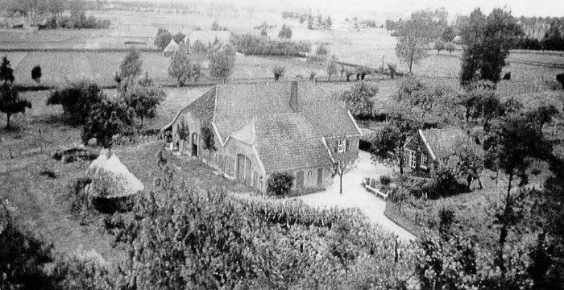
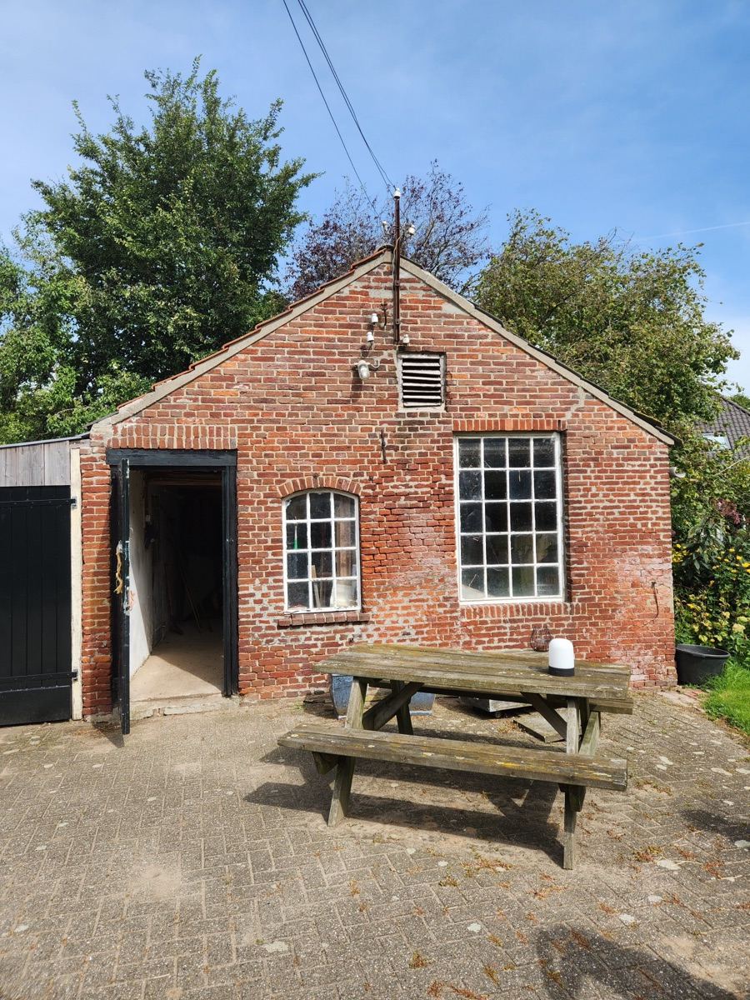

Overview
Geert Greydanus (1 December 1899 – 14 September 1965) was a Rotterdam police detective. On 9 April 1943 he went into hiding rather than arrest Jews, and he joined the resistance around Varsseveld in the Achterhoek, where the Satter household and the Varsseveld group knew him as "Oom Geert" (J. Satters letter, 1952; Verzetsrapport). He was arrested on 20 April 1944 and survived Vught, Buchenwald and the Niederorschel subcamp. After the war he went back to the police, but he emigrated to Ontario in September 1947. He worked as a farm labourer and later farmed his own land near Clinton, until cancer forced him to leave the farm in 1964. He died in Clinton in 1965.
This timeline combines three Drive folders: the Greydanus/Walinga family papers (Geert's journal kept by his daughter Wietske, the post-war restoration form, police letters), the Stichting 1940–1945 pension file, Red Cross and Buchenwald records, and family accounts. Those accounts include Jurjen Hoekstra's 2013 Levensverhaal van Geert Greydanus, Ben Greydanus's 2025 interview, and Joel Dykstra's school essay about Wietske.
Family at a glance
| Person | Relationship | Dates in the papers |
|---|---|---|
| Geert Greydanus | Subject | Born Kubaard (Hennaarderadeel), Friesland, 1 Dec 1899; died Clinton, Ont., 14 Sep 1965 |
| Jacobje "Johanna" Pebesma | Wife | Born Garijp, 22 Apr 1902; married Geert in Heerlen on 9 May 1923 |
| Jacob Greydanus and Saakje Hibma | Parents | Geert was the second of 9 children. Jacob: born Lollum 18 Jan 1873, died Anjum 18 Sep 1952; Saakje: born Dronrijp 2 Jan 1877, died Anjum 5 Aug 1962 (Wietske Walinga, "The Greydanus History") |
| Wietske | Daughter | Born Rotterdam, 4 Mar 1924 (Vught card: "Grietje Wietske"); married Dirk Walinga 27 Nov 1948 |
| Jacob (Jaap) | Son | Born 16 Jan 1927 (War Graves Foundation; Wietske Walinga, "The Greydanus History", p. 1; Hoekstra gives 17 Jan); killed in Pasuruan, Dutch East Indies, 21 Aug 1947 |
| Jan (John) | Son | Born 4 Jun 1928 |
| Gerard Bouke (Jerry) | Son | Born 15 Feb 1932 |
| Cornelis Wiebe (Con) | Son | Born 6 Nov 1936 |
| Bernhard (Ben) | Son | Born 6 Oct 1944, while Geert was in Buchenwald |
Family dates: pension decision 1967, police letter 1952, Hoekstra 2013, pp. 2–3, 18, Joel Dykstra essay, Ben interview. Every row below links to the file it came from.
The arrest on 20 April 1944 divides a year in hiding from almost a year in the camps. Dates come from the police, camp and pension records. The family's Vught dates (2–18 Dec 1943) come from the Arolsen hostage cards.
Acknowledgement
This website builds on the research of Jurjen Hoekstra. He gathered what he found into an English booklet, Geert Greydanus: a man of principles, deep belief and courage (September 2020), and in the same year submitted it to Yad Vashem with a proposal to recognise Geert (Hoekstra 2020; proposal). Yad Vashem did not accept the proposal (see The Yad Vashem submission (2020)), but the family is deeply grateful for the years of careful work it took to bring this record together.
In the booklet’s introduction he writes: “This booklet is my personal and subjective view on Geert Greydanus. Comments, remarks and additions are very welcome.” (Hoekstra 2020, p. 5). The same holds for this website: you can send feedback, corrections or additions through this form. The form is on GitHub, so you may need to create a free GitHub account first.
Geert’s journey on a map
From the day he went into hiding to the day he left for Canada. Press play, or pick any step to jump to it.
Refuses to arrest Jews and goes into hiding, first at an address in Rotterdam. More
Hides with H. Wiggers at the farm Plak-an near Winterswijk. More
A year on Hendrik Satter's farm as “Oom Geert”, helping people in hiding and Allied airmen. He spends some weeks of it with relatives in Friesland. More
Arrested at the farm. The truck takes the prisoners to Avegoor, where they are stripped: “Greydanus was in bad shape”. More
Taken on to the SD (security police) building in Arnhem. More
Held in Kamp Vught and tortured in its bunker, cells 117 and 93. More
Sent by train with 15 others to the prison in Kleve, just over the German border. More
Registered at Buchenwald concentration camp and put in the overcrowded “Little Camp”. More
One of the 100 men who set up the Niederorschel subcamp, working 12-hour days for Langenwerke AG. More
Death march back to Buchenwald: 527 set out and 425 arrive; the fate of the rest is unknown. US troops liberate Buchenwald on 11 April. More
Reaches the reception centre in Eindhoven and sends word to Johanna: “Am well and healthy.” More
Home in Rotterdam, “unrecognisable”. Back at work with the police two days later. More
Sails for Canada with his family on the Tabinta. He works as a farm labourer in Ontario, later farms near Clinton, and leaves the farm when he falls ill in 1964. More
1899–1943: Friesland, Rotterdam and the police
Geert grew up on Frisian farms, served in the military police, and by 1940 was a senior detective with Rotterdam's Centrale Recherche. Rows run oldest first, so the timeline reads in order.
| Date | Event | Source |
|---|---|---|
| 1 Dec 1899 | Born in Kubaard (municipality of Hennaarderadeel), Friesland. He was the second of 9 children of Jacob Greydanus and Saakje Hibma | Police letter 26 Sep 1952; Buchenwald cards; Hoekstra 2013, p. 2 |
| 1906–1916 | Johanna's family (Jan Pebesma and Wietske Baron) works in the mines near Recklinghausen, then moves to the Limburg mines (Treebeek, Brunssum). This is where Johanna learned German. Wietske Walinga dates the move to Recklinghausen to 1907 and the return to Treebeek to 1916. Ben remembers it differently: "they went to Germany to milk cows. At the start of the first war, they came back to Limburg and became coal miners" | Hoekstra 2013, p. 3; Ben interview; Wietske Walinga, "The Greydanus History", p. 1 |
| c. 1910 | Sent at about 10 or 11 to work for the farmer next door "just to get rid of the mouth at the table" (Ben). Hoekstra says only that Geert went to work after primary school | Ben interview; Hoekstra 2013, p. 2 ("Na de lagere school ging Geert werken bij de boer") |
| Before 1923 | Military service in the military police, which became his route into the Rotterdam police | Hoekstra 2013, p. 2 |
| 9 May 1923 | Marries Jacobje "Johanna" Pebesma in Heerlen. They met while she was staying with relatives in Friesland | Pension decision 23 Mar 1967; Hoekstra 2013, p. 3 |
| 1924–1936 | Children born in Rotterdam: Wietske (4 Mar 1924), Jacob (16 Jan 1927; Hoekstra gives 17 Jan), Jan (4 Jun 1928), Gerard Bouke (15 Feb 1932), Cornelis Wiebe (6 Nov 1936) | Wietske Walinga, "The Greydanus History", p. 1; War Graves Foundation; Hoekstra 2013, p. 3; Joel Dykstra essay |
| Before 1940 | Promoted to brigadier, then "majoor" ("Voor de oorlog begon", Hoekstra), working as a detective with the Centrale Recherche. Ben recalls his insurance-arson sting and his discreet use of clairvoyants on missing-person cases | Hoekstra 2013, p. 3; Stichting letter (in Verzetsrapport); Ben interview |
| 17 Dec 1938 | An Advent meditation in the Sunday supplement of De Rotterdammer. Part of it was later copied out by hand ("Adventsoverdenking uit Zondagsbl. v/d 'Rotterdammer', dd. 17-12-'38 (een gedeelte)"), and the handwritten copy was kept folded in Geert's wallet. The copyist is not named. The passage dwells on Christ guiding "onze voeten … op den weg des vredes", a way on which "wij … niet beangst [behoeven] te zijn voor mogelijk dreigende gevaren, noch in wanhoop te geraken over den nood des tijds" | Papers in Wallet (transcription and translation) |
| May 1940 | Geert and Johanna, living at West-Varkenoordseweg 359b, witness the fighting for the bridges and the bombing of central Rotterdam | Hoekstra 2013, p. 3 |
| Undated (probably 1941–43) | A typed instruction from the Centraal Bureau, Inlichtingendienst, kept in the family papers: "Huiszoeking d.q. arrestatie Jehova's Getuigen". Detectives were to meet in the canteen at 5:45 and set out in patrols at 6:30, each patrol searching two homes for Jehovah's Witness literature and Bibles with notes in Isaiah, Daniel and Revelation. Anyone found with such material, or who refused to sign an enclosed form, was to be arrested and held in the basement of the Centraal Bureau. It is not dated, signed or addressed. Prisoners had to carry their persoonsbewijs, the identity card introduced during the occupation, and Geert left the force in April 1943, so it most likely dates from 1941–43. It concerns Jehovah's Witnesses, not the round-up of Jews on 9 April 1943 | Police instruction + transcription and translation |
| Early 1943 | Police leadership announces that taking part in actions ordered by the Germans is compulsory, on pain of dismissal | Hoekstra 2013, p. 4 |
| 9 Apr 1943 | Does not report for duty to arrest Jews and goes into hiding. Joel's essay says "only one other person on the police force went into hiding". The other was Nicolaas van Velzen (see 10 Apr 1943) | Police letter 26 Sep 1952; Police Dismissal (translation); Joel essay |
| 10 Apr 1943 | Dismissed as brigadier of the Rotterdam municipal police, with effect from this date (see 15 Jun 1943). Geert's own restoration form of 1947 gives the dismissal as "met ingang van 9 April 1943, door den Hoofd Comm. v. Politie" (Geert form p. 1). That day the force leadership telexed the Directorate-General of Police that "de rechercheurs G. Greijdanus en N. van Velzen" had not come in for the arrests of Jews the evening before, nor reported for duty that morning. Van Riet's summary of the telex goes on: "Tot dan toe hadden ze steeds voldaan aan opdrachten van jodenarrestaties" (until then they had always complied with orders for arrests of Jews), and they had almost certainly gone for religious reasons. Both had left home that evening and "hadden geweigerd tegen hun vrouwen te zeggen waarheen zij gingen" (had refused to tell their wives where they were going), and a search notice for them was requested in the Algemeen Politieblad. The telex is known through Van Riet's summary. Hoekstra, who cites no source for it, also writes that Geert at first took part: "In eerste instantie doet Geert mee, maar al snel stuit hem dit tegen de borst" (at first Geert goes along, but it soon goes against his grain) (Hoekstra 2013, p. 4). Both men were taken back into the Rotterdam police after the liberation. Van Velzen was the only other Rotterdam policeman who refused that day and went into hiding; no source says the two acted together or hid together. See Nicolaas van Velzen | Verzetsrapport; Van Riet 2008, p. 394 (F.A.M. van Riet, Handhaven onder de nieuwe orde, dissertation, University of Amsterdam) |
| 28 Apr 1943 | The office of the Director-General of Police (Hoog-Soeren) sends the written dismissal "als ambtenaar der Staatspolitie" for "unsuitability", citing his absence on 9 April for the arrest of Jews. It is signed for the acting Director-General ("De Waarnemend Directeur Generaal") by the Chief of the General Staff | Police Dismissal + transcription and translation |
| 15 May 1943 | The illegal paper Vrij Nederland reports the refusal under the headline "Rotterdamsche politie als Jodenvangers!": at the Jewish raids a few weeks earlier, 1,000 Rotterdam policemen and detectives were called together one evening to round up the last Jews, and of them all "TWEE … weigerden": "de rechercheurs GREIJDANUS en VAN VELSEN", who did not wait for the measures against them "maar doken onder". The first public account of what Geert did, written at the time and independent of the family | Vrij Nederland, 15 May 1943 (p. 7) |
| 15 Jun 1943 | De Nederlandsche Politie, journal of the collaborationist Kameraadschapsbond der Nederlandsche Politie, prints the dismissal among its staff changes for Rotterdam: "Ontslagen m.i.v. 10-4-'43 de Majoor G. Greidanus; de Agent N. van Velzen". Van Velzen is dismissed the same day. It gives Geert's rank as Majoor, as the Rotterdam police statement of 26 May 1945 does; the Verzetsrapport says brigadier, and Vrij Nederland calls both men rechercheurs | De Nederlandsche Politie, 15 Jun 1943, p. 24 |
| Aug 1943 | Asked by the German Order Police for a full list of fugitive policemen in the Rotterdam region by 25 August, the regional police chief Boelstra names six. Two had refused at the first round-up of Jews in October 1942; "Om dezelfde reden waren N. van Velzen en G. Greijdanus omstreeks 10 april 1943 ondergedoken". The list served Rauter's order to take hostage the families of policemen who went into hiding with their pistols (see 1 Dec 1943) | Van Riet 2008, p. 546 |
| 20–22 Oct 1943 | A further decision dismisses him as an unpaid rijksveldwachter. Police President J.J. Boelstra sends notice to the family home on 22 Oct | Geert journal p. 6 |


April 1943 – April 1944: in hiding, "Oom Geert" in the Achterhoek
For a year Geert hid in Winterswijk and then on Hendrik Satter's farm at Sinderenseweg 64, Sinderen, near Varsseveld (51.92285, 6.46744; family account; photo), where he worked with the local LO (help for people in hiding) and the Trouw group. On his signed 1947 government restoration form he gave his cover name as "de Boer Gerrit". J. Satters, of the family that hid him, wrote on 26 September 1952 that the Varsseveld group called him "Oom Geert" (handwritten letter, translation). The Stichting's report of the same year, written for the same pension file, types it as "Oom Gerrit" (Verzetsrapport). These two documents are the sources for the nickname. Gerrit van den Boogerd, the leader of the Achterhoek military group, was a different man known as "Oom Gert" (Het Grote Gebod I, p. 482). See Pseudonyms: exact wording.
| Date | Event | Source |
|---|---|---|
| 9–12 Apr 1943 | First hiding place, in Rotterdam: "aan de Sichemstraat 14 p/a of ten huize van J. Berlijn", the home of Jo Berlijn, whose widow gave Sichemstraat 14 as her old address when she announced in 1945 that he had been shot in Vught | Geert form p. 1 |
| 12 Apr – late Apr 1943 | Hides "bij H. Wiggers, hoeve Plak-an te Winterswijk". This is Hans Wiggers (died 2005, aged 94), whose small farm Plakan stood where the Jasmijnlaan in Winterswijk is now (OudWinterswijk: Hans Wiggers). Plakan sheltered people in hiding until the end of the war; Hans Wiggers: "We had Jews from Winterswijk whom we already knew from before the war, and later also those we didn't know" (Achterhoek Nieuws, 4 May 2020). Yad Vashem recognised him as Righteous Among the Nations in 1979 for sheltering Aaron van Gelder in the round-up of 8 Oct 1941 (Yad Vashem: Hans Wiggers). Not to be confused with Hendrik Jan Wiggers of the "Bosberg" farm in Aalten, who hid the Jewish Meijler family and was arrested on 20 Apr 1944 (Yad Vashem: Hendrik and Aleida Wiggers; Oorlogsbronnen: Hendrik Jan Wiggers) | Geert form p. 1; Verzetsrapport; J. Satter letter 1952 |
| Late Apr 1943 – 20 Apr 1944 | Hides with the H. Satter family between Sinderen and Varsseveld, "onderbroken door eenige weken, bij familie en kennissen in Friesland" (interrupted by some weeks with relatives and friends in Friesland). The farm was a resistance centre: Satter co-founded the local Trouw distribution and sometimes sheltered more than 30 people in hiding. A 2014 Trouw article by Meindert van der Kaaij, based on Willemien (Wil) Satter's memories, says the first LO meeting was held on the farm and that Trouw's leadership met there regularly after the paper was founded in Aerdenhout on 30 Jan 1943 (Trouw, text read from Jared's blog copy). Hoekstra adds that neither Wil nor Geert was allowed into those meetings: "De dochter van Hendrik Satter, Wil, mocht niet aanwezig zijn bij deze vergaderingen, evenmin als Geert Greydanus" (Hoekstra 2013, p. 5) | Geert form p. 1; Hoekstra 2013, pp. 4–7; Hendrik Satter, Oorlogsgravenstichting |
| 1943–1944 | Lives under the cover name "de Boer Gerrit geb. 1-9-97 te Leeuwarden" (his own signed declaration). Schaap adds that he carried a false Rotterdam police ID (P.B.). Exact quotes are under Pseudonyms: exact wording | Geert form p. 4, section V; Schaap account, NIOD 251a |
| 1943–1944 | As "Oom Geert" he helps the Varsseveld group and the LO: placing people in hiding, arranging meetings, sheltering downed Allied pilots and distributing illegal newspapers (1952 Verzetsrapport and the letters of J. Satter and W.E. Braak-Raterink, written for the Stichting 1940–1945, which confirmed his resistance service on 13 Jan 1953). He also leads Sunday services for the people hiding on the farm (Hoekstra 2013, p. 7). Hoekstra, citing no source, writes the opposite about the resistance work: "Geert zal ook niet actief bij het verzetswerk betrokken zijn geweest. Dat was te riskant" (Geert will not have been actively involved in the resistance work either; that was too risky) (Hoekstra 2013, p. 5) | Verzetsrapport; Satter letter; SEV report; Hoekstra 2013, p. 7 |
| 1943–1944 | By his own account to Ben, he worked as the underground's "internal detective", tracing who was skimming stolen ration coupons. He carried a revolver and three sets of false ID, and helped run a sting that exposed two German sympathisers | Ben interview |
| 1943–1944 | Visits Johanna's Baron relatives in Suawoude, Friesland, sometimes disguised as an old farmer. Leni de Beer, a Jewish teacher from Rotterdam, hid from spring 1943 with Johanna's uncle and aunt, Jurjen and Jeltje Baron, in Suawoude. Yad Vashem says only: "During her years in Rotterdam, she had become acquainted with a Mister Baron, who had early on mentioned that she could count on his family in case of need." No source names Geert as the link. Hoekstra suspects it ("possible, Geert Greydanus played a role here") but concludes it was "niet bevestigd" (not confirmed) | Hoekstra 2013, pp. 1, 7, 20; Hoekstra Yad Vashem report |
| 7 Nov (year unclear) | Clandestine sermon "De vluchteling in zijn schuilplaats" (no. 4), with a typed warning to people in hiding: "HOOR, ZIE maar ZWIJG!" Geert kept it in his wallet | Papers in Wallet (transcription and translation) |
| 1 Dec 1943 | Johanna and all five children are taken hostage (Hoekstra says four), questioned at the police station and SS headquarters, then taken to Kamp Vught. A letter from Vught of 15 December gives their numbers: Johanna 0666 and Wietske 0667 in the women's camp, Jacob 8426 and Jan 8428 in the men's camp, "terwijl de beide jongste kinderen geen no. hebben" (while the two youngest have no number). This was Rauter's policy against police desertion: the relatives of officers who went into hiding with their pistol and ammunition were to be arrested and interned in a camp. If the officer reported within four weeks, his family was freed and he was put to work in a concentration camp; if the Order Police caught him, he faced a German military court for illegally holding a firearm (Van Riet 2008, p. 546). About 150 relatives of police officers in hiding were held in Vught as hostages (Van Riet 2008, p. 547). Van Velzen's family was taken the same way at about the same time: his wife, E.M. Jonkergouw, and their three children (8, 5 and 4) were arrested at home on or about 2 December, she was questioned by the SD man Richter and told him she did not know where her husband was, though she did, and the next day she and the two eldest children were taken to Kamp Vught. They stayed about three weeks, until Rauter pardoned the families of policemen in hiding (Van Riet 2008, p. 547) | Hoekstra 2013, p. 6; Geert journal p. 3a |
| Dec 1943 | Geert panics and wants to give himself up. Hendrik Satter and Anne Schaap talk him out of it, and Wil Satter and her fiancé Schaap take him by train and bus to Schaap's parents' farm in Beetgum, Friesland, for a few weeks. A Friesland LO list signed by D.J. Autsema at Dantumawoude on 15 June 1945, of people he helped with hiding addresses, ration cards and identity papers, has the entry "Greijdanus, Gerrit, 38 j., Rotterdam West. Varkenoordseweg 359b.", hiding address "Beetgum. (Jelle v.d. Schaaf)", "ondergedoken rechercheur van politie R'dam. gehuwd". The address is the family home, so this is Geert, though the age is wrong (he was 44) and the first name is Gerrit, as in his cover name "Gerrit de Boer". Hoekstra names the Beetgum hosts as Schaap's parents; Autsema names Jelle van der Schaaf (NIOD 251a inv. 7, scan 0073) | Hoekstra 2013, p. 6; Ben interview |
| 6–15 Dec 1943 | Letters to and from Vught. On 6 Dec Wietske (prisoner 0667, Block 24) writes home asking for food and for sweaters for Jaap and Jan, and gives the rules: one letter every two weeks, one parcel per person per week; "Moeder, Gerard en Corrie hebben nr. 0666". On 7 Dec a helper reports seeing Cornelis and bringing a St Nicholas gift. On 12 Dec Jan writes from the men's camp: "We zijn hier nu al 10 dagen. De eerste week hoefden we niet te werken maar nu wel". On 15 Dec a letter gives the numbers: Johanna 0666, Wietske 0667, Jacob (16) 8426, Jan (15) 8428 | Geert journal 1and2, 1b, 1a translation, 3a, 4a; Geert journal 1a (Wietske, 6 Dec); journal transcriptions |
| 18 Dec 1943 | Rauter releases the police officers' families "in view of the coming Christmas season". The Vught index cards date it exactly. Johanna's reads "Greydanus geb. Pebesma, Jacobje … Gijz. 0666 … Garijp … met 2 kinderen … Binnengekomen: 2 Dec. 1943, Vrijgelaten 18 Dec. 1943" (Arolsen 360367, file 360366). Wietske's card, as "Greydanus, Grietje Wietske … Gijz. 0667 … Rotterdam, 4 Maart 1924", gives the same "Binnengekomen: 2 Dec 1943" and "vrijgelaten 18 Dec. 1943" (Arolsen 360364). "Gijz." means gijzelaar, hostage. Hoekstra: Johanna takes the youngest children to Geert's family in Anjum, and Jacob and Jan go to Lammert and Romkje Baron in Suawoude. Wietske remembers it differently: after a family reunion in Friesland in early January 1944, Gerard and Cor stayed with Tjebbe and Klaske Tibma-Greydanus in Ezumazyl, near Anjum, until after the liberation, "So only 4 of us went back to Rotterdam"; Jaap and Jan went to Friesland only after Ben's birth in October 1944, to Oudeschool and then Genum (Wietske Walinga, "The Greydanus History", p. 2) | Rauter note no. 406/1943 + translation; Hoekstra 2013, p. 6 |
| 29 Dec 1943 | The Rotterdam Police President circulates Rauter's note. Rauter says he released the families because the desertion of Dutch police officers had stopped entirely ("geheel opgehouden", in Van Riet's summary of the letter), and offers to take the officers back if they report within 14 days and behave loyally from then on. Boelstra's covering note sets the deadline at 3 January 1944. Geert does not report. The note is dated 29 December 1943; Van Riet dates Boelstra's forwarding of it to 27 December | Rauter note translation; Van Riet 2008, p. 547 |
| 1943–1944 | Through former colleagues L. Kits and Th. v. Bliemen (the handwriting could also read Briemen), f 300 is paid "omstreeks zomer 1944" (around summer 1944), when Geert was already in Vught; the form does not say who received it. Separately, beginning "spoedig na ontslag" (soon after his dismissal), the Commissie voor Bijzondere Nooden of the deacons of the Gereformeerde Kerk, Rotterdam-Zuid (Katendrecht), pays f 3,662.70. Page 2 of the restoration form gives the same two sums: f 300 received "als ondersteuning … van of vanwege illegale zijde" and f 3,662.70 "uit geldleening", marked "v/d Kerk", f 3,962.70 in all | Geert form p. 2; Geert form p. 6; Context doc (journal 3–4) |
| Spring 1944 | Ordered to work for the Trouw group in Friesland. In March 1944 he helps Theo van Braak with downed pilots | Verzetsrapport; Braak-Raterink letter |


The Gerstein report in the chicken coop
A month before Geert came to Hendrik Satter's farm, one of the first eyewitness accounts of the Nazi gas chambers was written out in its farmhouse and hidden in its chicken coop. It lay there, under a roof tile, for the whole year Geert hid on the farm. The witness was Kurt Gerstein, an SS officer. He never came to Sinderen himself: his account reached the farm through two Dutchmen, a friend of his in Doesburg and a resistance man who worked with the Satters.




No source says Geert saw the document or knew it was there. This section tells its story because it happened on the farm and among the people he lived with, and because it is about the fate he refused to help bring on Rotterdam's Jews.
Who Kurt Gerstein was
Gerstein was born in Münster, Germany, on 11 August 1905 and trained as a mining engineer. He was a committed Protestant, active in church youth work and in the Confessing Church, the part of the German Protestant church that resisted Nazi control. In 1936 he was arrested for sending out anti-Nazi religious pamphlets and expelled from the Nazi party; in July 1938 he was held for about six weeks in the Welzheim camp.
In February 1941 his sister-in-law, Berta Ebeling, died at Hadamar, one of the hospitals where the Nazi "euthanasia" programme killed psychiatric patients. In March 1941 Gerstein joined the Waffen-SS. He later said he joined to see from the inside what was being done and to tell the world; historians note that he had applied before Berta's death, and his motives are still debated. Part of his basic training was in Arnhem, and while he was there he looked up an old friend from a Christian student association, the Dutch engineer J.H. (Herman) Ubbink, who ran an iron foundry in Doesburg.
Because he knew about disinfection, the SS posted him to its Hygiene Institute in Berlin, where he dealt with Zyklon B, the poison gas also used at Auschwitz. In August 1942 he was sent to the extermination camps of Belzec and Treblinka in occupied Poland, to change their gas chambers from engine exhaust to cyanide. At Belzec he watched the gassing of a transport of Jews from Lwów, from their arrival by train to their burial. The change he was sent to make was never carried out. On the train back to Berlin he told a Swedish diplomat, Baron Göran von Otter, everything he had seen, and in the months that followed he tried to tell the papal nuncio in Berlin, Swiss diplomats and Protestant church leaders.
What the "Gerstein Report" is
In April 1945 Gerstein gave himself up to the French army in Reutlingen. Held in Rottweil, he wrote down his account in French and then twice in German (April–May 1945). These statements are what historians call the Gerstein Report. A French version was used as evidence at the Nuremberg trials (document PS-1553), and it is still one of the most quoted descriptions of how the gas chambers of Belzec and Treblinka worked. Historians treat it as a genuine eyewitness account, though some of its numbers are too high; the historian Florent Brayard argues that those numbers are what the camp commanders boasted to Gerstein at the time.
The French moved Gerstein to the Cherche-Midi military prison in Paris as a suspected war criminal. He was found dead in his cell on 25 July 1945; the official finding was suicide, though some suspect he was murdered. In 1950 a German denazification court in Tübingen classed him as an offender because of the Zyklon B he had supplied. In January 1965 the state of Baden-Württemberg cleared his name. His story is told in Rolf Hochhuth's 1963 play The Deputy, which opens with Gerstein pleading with the papal nuncio, and in Costa-Gavras's 2002 film Amen.
How his account reached the Satter farm
Berlin, February 1943. Ubbink visited Gerstein in Berlin and found him in despair. Ubbink later wrote: "He asked me if I could get in touch with people who had radio contact with London. I told him I could. He asked me, no — more than that, he begged me to transmit this story to England, so it would be known all over the world, and that the German people could be warned." (Brayard, p. 161)
Doesburg. Ubbink's foundry was a distribution point for the underground papers Vrij Nederland and Trouw. He passed Gerstein's account to a resistance man he knew only as "Cor": Cornelis van der Hooft from Overschie, Rotterdam, the chief distributor of the illegal papers in the Achterhoek and one of the early Trouw men. Twenty years later Ubbink recognised him from a photograph: "We called him Cor." (Van Kaam 1995; De Gelderlander, 5 May 2012, reproduced in Hoekstra 2013, pp. 22–23)
The Satter farmhouse, 25 March 1943. Van der Hooft came to the farm in Sinderen and wrote out a four-page Dutch version, headed Tötungsanstalten in Polen ("Killing installations in Poland"), with Hendrik Satter and his son Jo watching. Jo remembered: "I can still see Cor sitting there writing. He was actually completely shaken by it. ... When Cor was finished, he said: 'This is such a terrible thing; you must read this.'" (Van Kaam 1995; Brayard places the meeting "in the outskirts of Doesburg", p. 163)
The chicken coop. Jo's sister Willemien, then 21, overheard them: "They did not know what to do with it. I heard them say 'unbelievable' a few times. They thought it might be a trap. Could the writer be trusted, and if so, were he and his family safe, because he could easily be recognised from the report? In the end I heard Jo say: 'put it away in the chicken coop.'" (Trouw, 30 Jan 2014, translated) The plan was to get the officer and his family into hiding first, with the Satters finding an address, and only then publish. Van der Hooft went to take that message back to Ubbink, but never came back for the document. (Hoekstra 2013, p. 23)
London, April–September 1943. The account did reach the Dutch government in exile. A typed version almost identical to the farm's, marked "Rappt. Nr. 61", probably arrived in London on 24 April 1943 or a few days before, "perhaps by radio". The minister of war, Van Lidth de Jeude, paraphrased it in his diary on 8 May. In the summer of 1943 Van Haersma, of the government in exile, decided to ask the Inter-Allied Information Committee in New York to publish it; Brayard finds it "difficult to determine" whether it was ever passed on, and his account ends "in uncertainty". As far as is known it was never published. The London copy was only found in 1992. (Brayard, pp. 165–167)
The report and Geert
The timing. The report was written on 25 March 1943. Two weeks later, on 9 April, Geert went into hiding rather than arrest Jews in Rotterdam, and by late April he was living on the Satter farm. The document stayed under the roof tile until after the war. Interpretation, not a source: what Geert refused to take part in is what the report describes.
Cor van der Hooft and the Satters. No source puts Geert and Van der Hooft together. In 1946 his widow filled in a US Army helper form for him: known as "Cor", member of "Leeuwengarde and Trouw", "Arrested on 17-4-44". She wrote that his father had told her "he got pilots away", and named Hendrik Satter and Anne Schaap among the people who could give more information. The Army checked: Satter and Schaap did not mention him, a note on the form reads "but nobody mentions him", and it is marked "No award". Van Kaam writes that he was arrested on a train in mid-April 1944 because of an error in his identity card, a few days before the farm was raided and Geert, Hendrik Satter and Schaap were taken (NARA helper file, pp. 2–3; Van Kaam 1995; see the airman-helping network). Shot in the legs while trying to escape, he was later taken to Sachsenhausen, near Oranienburg. In April 1945, when the prisoners were marched away, he could not walk, and the SD shot him by the side of the road. His widow gave his death as 22 April 1945. (Van Kaam 1995)
Geert was kept out of it. Hoekstra writes that Geert was not allowed into the Trouw meetings at the farm (Hoekstra 2013, p. 5). That fits the resistance rule Willemien describes: the less you knew, the less you could give away under torture.
After the war
The farmhouse burned down on Good Friday, 30 March 1945, the day Sinderen was liberated, in the fighting with the Canadian army (family account), but the chicken coop survived. Jo Satter lifted the roof tile and found the document. He kept it among his papers until 22 November 1966, when he saw a rerun of Lou de Jong's television series De Bezetting (The Occupation) and sent De Jong a copy. De Jong, the leading Dutch historian of the war, used it in a 1967 lecture to argue that even brave resistance workers could not bring themselves to believe the news of the gas chambers. Jo Satter always disagreed: they believed it, he said, but the man who gave it to them had to be got to safety first. (Van Kaam 1995; Brayard, pp. 163–164)
Gerstein never learned what had happened to it. A letter he wrote to Ubbink in 1945, a few weeks before he died, says: "Ask your people if they at least believe now what happened in Belzec, etc.!" Van Kaam writes that it was found in Rottweil in early 1949, never sent on by the hotel owner; Brayard, that it was found among Gerstein's effects after his death and sent to his widow in 1949 (Van Kaam 1995; Brayard, p. 162)
Today Van der Hooft's handwritten original is at the Herinneringscentrum Kamp Westerbork, given by the journalist Ben van Kaam, who had it from Jo Satter. The typed London copy is in the Nationaal Archief in The Hague. (Hoekstra 2013, p. 23, quoting De Gelderlander, 5 May 2012) Brayard's article prints the full report in English (pp. 174 ff.).
Sources for Gerstein's life outside the Netherlands: United States Holocaust Memorial Museum, "Kurt Gerstein"; JTA, 1965, on his rehabilitation; Brayard 2000.
The airman-helping network around Varsseveld (Jan–May 1944)
Two sets of records describe the Varsseveld group that sheltered Allied airmen in the months before Geert's arrest: the evader database of the Studiegroep Luchtoorlog (SGLO), and the US Army's 1945–46 helper files ("Vragenlijst voor helpers van Geallieerd personeel", National Archives RG 498, series Case Files of Dutch Citizens Proposed for Awards for Assisting American Airmen). Geert is not named in any of them. No helper file exists under Greydanus, Greidanus or Greijdanus, and the helper lists filled in by Hendrik and Jo Satter, Anne Schaap and Theo van Braak's widow do not mention him. They do show the people he lived and worked among, and they tie the 20 April 1944 raid on the Satter farm to the hiding of an American airman.
| Date | Event | Source |
|---|---|---|
| 4–6 Jan 1944 | 2/Lt. Ford W. Babcock, bombardier of a B-17, lands near Sinderen. Marechaussees C.C. Poulie and W. Helmink spirit him away and bring him to the Satter farm. Jo Satter: "4th Jan 1944 C.C. Pouli and W Helmink came to us with the American flyer Ford William Babcock. After having slept and received following clothes: 1 suit, 1 overcoat and overall, the flyer was brought by A. Schaap and W. Helmink and me to G.H. Hofs, C 345, Varsseveld, because the S.D. was searching in our neighbourhood." Schaap lists Babcock as hidden 4–6 Jan 1944 | Jo Satter helper file; Anne Schaap helper file; SGLO E0244 |
| Jan 1944 (cause of 20 Apr arrest) | Hendrik Satter's own form: "Het verbergen van de piloot was de oorzaak van mijn arrestatie. De S.D. heeft mijn vee enz. in beslag genomen." Jo Satter: "On 20th April my father was arrested therefore; until the liberation he was at Siegburg (Dld) concentration-camp." A claim form for Hendrik Satter in the same file, undated on its first page, gives the sheltering as "only for 1 day + night in 1943" and adds: "Spent 2 months in Vught, 2 mo. in Utrecht, a week in Via Kleef and 9 mo. in Sieg[b]urg." This does not contradict the Willy Markus betrayal; it says what the SD was looking for | Hendrik Satter helper file, pp. 4–6; Jo Satter helper file, pp. 2, 8 |
| 18 Feb – c. 1 Mar 1944 | W/O Albert W. Bennett, RAF, shot down near Diepenveen (15 Feb 1944 according to SGLO; Schaap gives "25-2-44", hidden from 26 Feb for 8 days), is brought by train to Varsseveld, "possibly Th. van Braak (C372 at Varsseveld)", then handed to G.C. Slotboom, who hides him "in a hut in the woods (constructed by R. Knottnerus from Varsseveld)". Schaap's list: Bennett received from "Mees-Diepenveen", passed to "Th.C.v.Braak, later aan H. Leemrijse, Lichtenvoorde". Bennett reached Switzerland on 8 April | SGLO E0294; Schaap helper file, p. 4; van Braak helper file |
| 23 Mar – early Apr 1944 | 2/Lt. Robert Donovan and 2/Lt. William Weeks (B-17, crashed near Zelhem) are picked up by Slotboom, van Braak and Helmink and hidden 9 days. Schaap names the escort to Rotterdam: "A. Scholts, Ebenhaëzerstr. 116b, Rotterdam" (SGLO's "Scholz or Schalz"). In Rotterdam they hid at Mathenesserweg 118B. This is the closest the network comes to Geert's own Rotterdam connections, but the escort is named and it is not Geert | Schaap helper file, p. 4; SGLO E0399; van Braak helper file, p. 10 |
| 24–25 Mar 1944 | Lancaster ME684 crashes near Varsseveld; four crew evade through the Aalten group (Ket, Wikkerink, Leemreize, Lelivelt, ter Haar). A busy fortnight for the whole district a month before the raid | SGLO E0417, E0419 |
| 1 May 1944 | Theo van Braak is arrested, eleven days after Geert. His widow: "My man has been arrested 1st May 1944 because of helping flyers. He died in a German concentration-camp for exhaustion." Jo Satter lists him as "murdered by the Germans" and Poulie as "shot 6th June 1944" | van Braak helper file, p. 5; Jo Satter helper file, p. 2 |
The group as the helpers listed it. Jo Satter (17 Aug 1945): "Th.C. van Braak, C 272, Varsseveld, murdered by the Germans; W. Hofs, C 345, Varsseveld, missed, probably also killed; C.C. Pouli, Varsseveld, shot 6th June 1944; A. Schaap, C 272, Varsseveld; W. Helmink, C 133, Varsseveld; G.C. Slotboom, Doetichemscheweg, Varsseveld; H. Leemreize, Lichtenvoorde; H. Satter, C 99, Varsseveld." Anne Schaap (16 Aug 1945) adds M. v. Prooyen (C 28) and Mej. D. Lammers (Spoorstraat), and says he always worked with "J. Satter, W. Hofs, C.C. Poulie, W. Helmink en Th.C.v.Braak, en later ook met G.C. Slotboom". All give their movement as Trouw / LO / KP Varsseveld.
What the other helper files add
The remaining Varsseveld-area files in the same series were read too. None names Geert, Greydanus or "Oom Geert". What they add:
Cor van der Hooft, arrested a few days before the raid. Cornelis Adriana van der Hooft of Delftweg 30, Overschie (Rotterdam), known to the airmen as "Cor", member of "Leeuwengarde and Trouw". His widow, 19 June 1946: "died in concentration camp Sacksenhausen 22-4-45. Arrested on 17-4-44." Among the people who could vouch for him she lists "H. Satter and A. Schaap, Varsseveld C 99". Her handwritten draft adds that he worked with "Dr. Arie Speelman" and sent drawings of the harbour of Terneuzen to the Allies. That he helped airmen is second-hand: she writes that his father "told me something about his illegal work amongst other things he got pilots away". The US Army checked the people she named and noted that Satter and Schaap did not mention him ("but nobody mentions him"); the file is marked "No award". He is the Cor van der Hooft of the 2014 Trouw article who stood in the Satter kitchen. Van Kaam writes that "In mid-April 1944, he was arrested on the train due to an error in his identity card. He tried to escape at Geldermalsen station" (Van Kaam, Trouw 1995, p. 3). (NAID 286702134)
Willy Markus confirmed by a second helper. H.J.A. Leemreize ("Piet", Lichtenvoorde), 1945: "By treachery of Willy Markens several workers have been shot or killee in battles", listing "Cees Pauli, Marechausse Varsseveld, shot" among them. A US Army note in his file records him receiving "pilots from Mr. W. Helmink at Varsseveld. The first time, two pilots on 5 January 1944" (Babcock's group). (NAID 286671112, pp. 8, 10)
G.H. Hofs, the next house after the Satters. Gerrit Hendrik Hofs, Aaltenscheweg C 345, sheltered Babcock on 5–6 January 1944 ("J. Satter, A. Schaap, my son Willem Hofs and W. Helmink" brought him; passed on to "H. Leemreize, Lichtenvoorde"). He was arrested too: "I have been arrested because I housed the on other side mentioned flyer by the S.D., but I did the fool and said that my son had done the work." His son Willem, the leader of the group, was "still missing: he was 1½ year in a concentrationcamp". (NAID 286661150)
Willem Helmink, marechaussee, Doetinchemsestraat C 133: Babcock was taken by the Feldgendarmerie to the town hall and "In samenwerking met één der politie beambten (Poulie) hebben we hem laten ontvluchten. Poulie is ondergedoken, één maand later gegrepen door S.D en ... gefusilleerd (6 Juni 44)." His helper list is the fullest: Leemreize, van Braak, Schaap, R. Knottnerus, H. Becking, Th. van Prooyen, J. Satter, G.H. Hofs, D. Lammers, G.C. Slotboom, G.H. Weenink, G. Hiddink, H. Gussinklo. (NAID 286659333)
R.B. (Riep) Knottnerus, who built the hut in the woods: Bennett stayed "± een week" in "een huisje van mij in een bos in Sinderen bij Varsseveld". (NAID 286667652)
Dien Lammers, Spoorstraat C 69, hid Donovan and Weeks for 9 days from 23 March 1944 and passed them to "P. Scholtz, Rotterdam". (NAID 286670537)
G.W. Gussinklo, D 314 Sinderen, hid "twee geallieerde vliegeniers" for one day in March 1944 and gave each a coat; handed to Slotboom, Helmink and van Braak. (NAID 286657435)
A caution on G.C. Slotboom. He claimed 23 evaders. The US Army later wrote that "Further investigation in the light of newly received information proves his story to be almost entirely false. He actually transported perhaps two pilots over short distances", and downgraded him. SGLO's accounts of Bennett and Donovan rely partly on his file, so treat his role there with care. (NAID 286689024, p. 4)
Why Geert is absent is not explained. These forms were filled in during August 1945, when Geert was back in Rotterdam, and each helper listed only fellow airman-helpers; Geert's own forms describe him as a policeman in hiding, not an airman helper. The "helps Theo van Braak with downed pilots" entry above rests on the 1952 letter of van Braak's widow, W.E. Braak-Raterink, written for Geert's pension file, and the 1952 Verzetsrapport.
A full-text hit for "Greidanus" in the series is a different man: "Idema Greidanus", a paratrooper "killed in action", in the file of J.J. Lowey Ball of Delft (NAID 286672718).
The betrayal: Willy Markus
The raid on the Satter farm on 20 April 1944 was one of many that day across the Achterhoek, all set off by Willy Markus, an informer for the German security police (the SD) who had spent three months inside the local resistance. The LO-LKP's own report on Varsseveld puts it plainly: "Willie Marcus ... The entire group of 'Black Kees' trusted him. On April 20, 1944, he struck. On that date, 3 persons were taken away here, namely Satter, Greydanus, and Schaap" (NIOD 251a inv. 20, scan 138, English rendering of the Dutch OCR). The Germans had a name for the Satter house: "het Broeinest", the hotbed (Oorlogsgravenstichting, Hendrik Satter).
Who Willy Markus was
Willem (Willy) Markus was born in Ambt Doetinchem on 24 March 1902. When the war began he ran the café his late father had built up at Hommelstraat 22 in Arnhem. It became a meeting place for black marketeers and German soldiers, and Markus bought drink for the German army and resold it at a profit. In 1943 he was jailed for receiving stolen goods, and came out as a V-Mann, a paid informer, for the SD. He learned the work from another Arnhem man, Johnny de Droog. (Wikipedia NL; Oorlogsbronnen)
How he worked, January – April 1944
Arnhem jail. His first job was to befriend a warder who smuggled notes out of the Arnhem prison for resistance prisoners. Markus and De Droog read the notes before they were delivered, and in January 1944 fourteen people were arrested in Velp and Rheden. (Wikipedia NL)
"Willy van Erp". In January 1944, under that name, he made contact with Gerrit van den Boogerd ("Oom Gert"), who led a military resistance group of more than 500 men. He passed himself off as a secret agent of the Dutch government in London. He won trust by bringing weapons, among them a carbine he put in the hands of Cornelis Ruizendaal ("Zwarte Kees"), leader of the Aalten knokploeg (KP), the armed squad. Wikipedia NL says that because the Germans controlled some of London's radio links, he could even have agreed phrases broadcast on Radio Oranje. Het Grote Gebod says only that he claimed the agreed phrase had gone out, and adds: "Blijkbaar is de 'afgesproken' slagzin nimmer omgeroepen" (apparently the 'agreed' phrase was never broadcast). (Het Grote Gebod, pp. 482–483; Wikipedia NL)
Kees Poulie of Varsseveld. Poulie was a wachtmeester (sergeant) of the marechaussee at Varsseveld who worked with the LO and spread Trouw. In January 1944 he helped the American airman Ford W. Babcock escape from the Germans and went into hiding himself (see the airman-helping network). Markus promised him a safe way to England through the Belgian "Witte Brigade", and Poulie left with him, taking his fiancée. When Markus later announced that both had arrived safely, Poulie was being interrogated in Kleve (Het Grote Gebod, p. 483). Westland adds that Markus met them in Zutphen on 8 March and had them arrested at Oosterbeek station the next morning, that the fiancée was Anna Droog, and that they were held in Kleve and then in the Vught bunker. The Polizeistandgericht 's-Hertogenbosch sentenced Poulie to death (death-sentence notice, 7 Jun 1944; Westland gives the date of the sentence as 2 June), and he was shot in the dunes at Overveen on 6 June 1944. (Westland, Marechaussee Contact, Oct 2020) What the SD got from his interrogation went onto its list of names (Wikipedia NL).
20 April 1944
The SD struck on 20 April, a day before Zwarte Kees planned to attack the home-guard post in Ruurlo where Markus lodged. In the morning Markus picked up Van den Boogerd and his deputy Dick Vermeij, who were arrested first. He then drove a borrowed lorry to Beltrum to collect four KP men for a "weapons delivery". They grew suspicious when they saw blood on the floor of the lorry and got out at Doesburg. Two of them were caught at Ellecom; Zwarte Kees and Gijs were surrounded in the house of the chemist Philippus Gastelaars in Doesburg, and Zwarte Kees was killed in a gunfight with the Waffen-SS. Gastelaars was taken to the Avegoor SS school in Ellecom and killed there: "nog diezelfde avond" (that same evening, 20 April) according to Het Grote Gebod, p. 484, on 21 April according to the Oorlogsgravenstichting. In the afternoon the raids followed in Neede, Eibergen, Borculo, Lichtenvoorde, Varsseveld and Aalten (Het Grote Gebod, p. 484); Wikipedia NL names Lintvelde, near Borculo, instead of Borculo.
The sources differ on what happened to the prisoners. Het Grote Gebod says that "een groot aantal gevangenen" were sent from Arnhem to Vught, that four of them jumped from the lorry on the way, and that "De anderen zijn, op een enkele uitzondering na, te Overveen in de duinen gefusilleerd" (the others, with a few exceptions, were shot in the dunes at Overveen) on 6 June (Het Grote Gebod, p. 484). Wikipedia NL and Westland give 27 prisoners sent to Vught the next day, of whom about half died before a firing squad or in the camps, and 22 men, ten of them from the Achterhoek, shot at Overveen on 6 June 1944. The German notice of 7 June 1944 names fifteen men sentenced to death, nearly all from the Achterhoek; at least one of them, Hendrik Wiggers, was not shot (death-sentence notice, 7 Jun 1944). Wikipedia NL and Westland add that a second wave of arrests followed on 30 April and 1 May, and that in all more than 70 people fell victim to Markus's betrayal, at least 28 of whom did not survive. (Wikipedia NL; Westland 2020) A US Army helper file from Lichtenvoorde names him too: "By treachery of Willy Markens several workers have been shot" (Leemreize helper file).
After the war
Once the Achterhoek knew who had betrayed it, Markus was of no more use there. After a failed attempt in Roermond to trap a resistance leader who in turn hoped to kidnap him, he asked to be sent to work in Germany. After the war he feigned insanity and spent a long time in psychiatric institutions. On 5 July 1949 the Bijzonder Gerechtshof (special court) in Arnhem sentenced him to life imprisonment. The sentence was later cut to 18 years: in October 1950 according to Westland, in December 1952 according to Wikipedia. Westland adds that a further year was taken off in 1954. He was released in 1956 and died in Enschede on 24 March 1978. (Oorlogsbronnen; Wikipedia NL; Westland 2020)
What this adds for Geert
Markus's trial files are identified. The CABR (the archive of post-war collaboration cases at the Nationaal Archief) holds two files on Willem Markus of Arnhem: inventory number 66972 (file 1851), on paper and readable only in The Hague, and inventory number 188 (file 350/49), which is scanned and readable in the digital CABR at the Nationaal Archief and other reading rooms. The bodies involved were the special court and prosecutor in Arnhem, the Bijzondere Raad van Cassatie (the appeal court) and the political investigation service in Doetinchem. (Oorlog voor de Rechter) Such files often list the people a traitor gave up, and may show why the SD came to the Satter farm.
A possible second informer. The same LO-LKP Varsseveld report says: "There must have been another traitor hiding in Varsseveld, but this never came out. It was a certain 'Cor'. Under J. de Drooge, three worked in the Achterhoek, in Varsseveld Cor." It goes on to link a "Heezen", also called Cor Arends, to the arrest of the Jolink sisters, who hid Jews. (NIOD 251a inv. 20, scan 138, English rendering) Not identified; worth a search in the CABR index.
A different Wiggers. Het Grote Gebod lists "Hendrik Wiggers (Oom Henk)" among Markus's victims: Hendrik Jan Wiggers of Vellegendijk 17, Aalten, who hid a Jewish family and died at Mittelbau-Dora in February 1945 (Synagoge Aalten; Oorlogsbronnen). He is not the H. Wiggers who hid Geert near Winterswijk in April 1943 (see 12 Apr 1943).
Reading to follow up. Henny Bennink, "Verzetsman Hendrikus (Hendrik) Johannes Antonius Leemreize 1909–1994", De Lichte Voorde 46 (June 2002), pp. 20–41, covers Poulie, Babcock and the events of 20 April. The books cited by Wikipedia may say more about Varsseveld: Bennink, Bezetting en verzet (2005), and Erik Schaap, De levens van Johnny de Droog (2020).
April – August 1944: arrest, the Vught bunker, transport
On 20 April 1944 the SD raided the Satter farm after the agent provocateur Willy Markus betrayed resistance groups across the Achterhoek. Geert spent nearly four months in Vught, was tortured in the camp bunker, and held to the story that he was only a conscientious objector, never part of the resistance.
| Date | Event | Source |
|---|---|---|
| 20 Apr 1944 | The farm is surrounded. Geert, Hendrik Satter and Anne Schaap are arrested (Hoekstra says they were listening to the BBC). Geert had already gone to Friesland for his new "job" with the Trouw group, but "had to go back to Varsseveld once more to get his belongings" (Wietske Walinga, "The Greydanus History", p. 2). J. Satter's 1952 letter agrees: about a week after he left for Friesland he came to Varsseveld for a weekend, with Hendrik Satter and Schaap, and was arrested (J. Satter letter 1952). Ben says he had a premonition and threw his revolver and false IDs into the outhouse. The LO-LKP's Varsseveld report names the three: "On April 20, 1944, he struck. On that date, 3 persons were taken away here, namely Satter, Greydanus, and Schaap" (English rendering on archieven.nl) (NIOD 251a inv. 20, scan 138) | Verzetsrapport; Hoekstra 2013, p. 8; Ben interview; Willy Markus (Wikipedia NL) |
| 20–21 Apr 1944 | The truck picks up Blaauwgeers and others in Lichtenvoorde, then goes to Avegoor (Ellecom), where prisoners are stripped and "Greydanus was in bad shape", and on to the SD building in Arnhem. On the way to Vught Jan Ket, Gerrit Kleisen and Henk Heinen jump from the truck (Schaap thinks one more did at Vught); Kleisen and Heinen are later brought into Vught bound. Freedom is not free names four different men, all of whom got home: "Jan Ket, de Vries, Dick Vermey and Joop Thijssen" (p. 83). It also has Jo Blaauwgeers stopped on his bicycle near Harreveld at dusk and taken away in a car, not picked up by the truck (p. 76) | Schaap account, NIOD 251a pp. 7–8; KP-Aalten (Wikipedia NL); Freedom is not free, pp. 76, 83 |
| 21 Apr – 9 Aug 1944 | Held in Kamp Vught. He is tortured in the bunker; Hoekstra names the interrogators v.d. Berg, Enkelstrodt, Wemelink and "bunker executioner" Popey. Freedom is not free names F.H. Kohrmeijer and J.H. van de Berg, SD men in the 20 April arrests, as guards in the bunker, and describes "Popeye" creeping along the cells in sneakers (Freedom is not free, p. 85). Ben describes beatings over a chair and alternating ice-cold and near-boiling baths. A fellow bunker prisoner, J. v.d. Hauw of Spannum, wrote on 16 Jun 1945 to a "Mevrouw Heinen" (probably the wife of Henk Heinen, named in Schaap's account) about her husband's arrival in the bunker "met de anderen uit Neede". He says a Willem [surname unclear] "kwam vlak naast Greydanus te zitten in een cel recht tegenover mijn cel" (came to sit right next to Greydanus, in a cell directly opposite mine) (NIOD 251a inv. 325, scan 56) | Verzetsrapport; Police letter 1952; Hoekstra 2013, p. 8; Ben interview |
| 21 Apr – 9 Aug 1944 (cells) | The Netherlands Red Cross summary of his own post-war statements: he "was held in the concentration camp Vught, from April 21 to 8 or 9 July in cel 117, then to August 9 in cel 93. On August 9 he was taken to the prison in Cleef" (Kleve). The 2015 family timeline puts the move into cell 117 on 27 Apr 1944 | Red Cross letter (drs. M. Schwartzenberg), transcribed in the Geert Greydanus Timeline doc |
| 1 May 1944 | Theo van Braak, the Varsseveld teacher Geert helped with pilots in March, is arrested in Varsseveld eleven days after Geert. He ends up in the Vught bunker; his camp card reads "Cel 93 / Bunker", the cell the Red Cross gives for Geert from early July, with the date 19 Aug 1944, ten days after Geert left Vught. He dies at Gross-Rosen (Striegau) on 31 Dec 1944 | Oorlogsbronnen: T.C. van Braak; Arolsen 342011; HGG II necrology |
| 6 Jun 1944 | The Achterhoek group, including Jo Blaauwgeers, Gerrit Kleisen and Kees Poulie, is executed in the dunes at Overveen. Geert is classed as a political prisoner instead | Schaap account; Jo Blaauwgeers; Hoekstra 2013, p. 8 |
| c. 22 Jun 1944 | A German-language appeal to Reichskommissar Seyss-Inquart, written about 9 weeks after the arrest: Vught says he is in a section without numbers, and a parcel has come back "ohne weitere Mitteilung" (without further notice). The draft is undated and unsigned | Geert journal 7a; 7 translated en; 7b, 7c, German typescript |
| 9 Aug 1944 | Leaves Vught on a transport to Kleve. Two helpers outside the camp write to Johanna that day. A handwritten letter, "Vught 9 Aug. 1944", signed "X", says that he left "naar Kleef in Duitsland" with 15 others, that they were on the platform at Vught at noon and "daar hebben wij hen rijkelijk voorzien van levensmiddelen" (we supplied them richly with food). A typed slip signed "N.N." says the writer spoke to him as he went on transport, "ik meen naar Kleef" (I think to Kleve), and that Geert asks her to stay strong "speciaal in verband met de vermeerdering in uw gezin" (especially in view of the increase in your family). The Buchenwald effects card later records his belongings coming "v. Haftanst. Kleve" (Arolsen 6004388). Hendrik Satter, who reached Kleve from Utrecht after 26 August, after Geert had left it, also says Geert had been there: "Greydanus also visited Kleef" | Geert journal 13and14, 14b; Satter in Schaap account; NIOD 251a inv. 20, scan 140 |
| 9 Aug 1944 | The day Geert leaves Vught, his fellow prisoner Jacob (Jaap) Stigter, 20, of KP-Neede, is shot in the camp. See Summer 1945 | NMK Vught: Stigter, Jacob |
| 9–15 Aug 1944 (his own words) | Geert's 1945 Red Cross form: "In Vught gevangenis van 21-4 tot 9-8-1944 in No. Cel 117 en vanaf 8 of 9 Juli Cel [93]" and then, on 9 Aug, "met eenige [mann]en en vrouwen (16 in totaal) per trein naar Cleef". He reached Buchenwald on 15 Aug, "ik als eenigste van dat transport in Buchenw." (I as the only one of that transport in Buchenwald). So the others on the Kleve transport went elsewhere. (Part of this passage is torn or stained; the words in brackets are reconstructions) | Red Cross form, Greydanus 1a |
| Aug 1944 | Two pencilled scraps survive in the journal. One, addressed to Greydanus, West-Varkenoordseweg, says that "Franssen uit … R'dam en Van Braak uit Varsseveld maken het goed. Dit zijn nog [?] in Vught" (are doing well. [They/we] are still in Vught), so it was written in the camp. The other, a brown scrap pasted in with a blue wrapper addressed to West-Varkenoordseweg 359b, reads: "Voorloopige bestemming in Cleef. Daarna verder, weet niet waarheen. Ik ben moedig." (Destination for now Kleve. Then on, don't know where. I am brave.) Hoekstra and Ben say Geert threw a note from the train and a stranger posted it to the family; they do not say which one, though the Kleve note fits the journey | Geert journal p. 8, 13and14; Hoekstra 2013, p. 8; Ben interview |


The men Geert named: fellow prisoners in Vught, 1944
On his Red Cross form, signed in Rotterdam on 12 August 1945, Geert was asked which fellow prisoners who had died in captivity he could name. He named fourteen men who had died, and two men who had been moved to other camps, a cellmate and a man from the neighbouring cell, nearly all from his months in Kamp Vught (Greydanus 1b; see the form in the timeline). On a second form he added one more, a man who died on the death march. He visited the families of Rohaan, Heinen, Van Braak and Berlijn himself, and met Stigter's family.

Almost all of them can now be identified. Most were arrested in April and May 1944, many in the same 20 April sweep as Geert, and held in Vught while he was in its bunker. Almost all were then executed: in the dunes at Overveen on 6 June 1944, at Fort Rhijnauwen near Utrecht on 25 July 1944, or in Vught itself in August 1944. The link between Geert and each man rests on Geert's own list; no other source yet names him beside any of them. Where an identification rests on a match between his description and the records, it says "probably".
Two sources from the time confirm much of the list. On 7 June 1944 the German police chief for the Netherlands announced that the Polizeistandgericht in 's-Hertogenbosch had sentenced fifteen men to death. They include Heinen, Poulie, Kruizinga and Rohaan, "den opperwachtmeester der marechaussee Teunis Wortman te Neede", Blaauwgeers, the painter Carel Verschuur of Wageningen, and "den hotelhouder Jacobus Westland" and "den bioscoopeigenaar Willem Westland te Wageningen" (German death-sentence notice, 7 Jun 1944). The list also names "den landbouwer Hendrik Wiggers te Dale", born 29 December 1886: Hendrik Jan Wiggers of Aalten, a different Wiggers from Geert's host (see 12 Apr 1943). His sentence was not carried out; he died at Nordhausen in February 1945. And in May 1945 the Catholic journalist Louis Frequin, who had been held in cell 154 of the Vught bunker, described the evening of 5 June 1944, when he spoke through the spy-hole of his door to the condemned men in the cells around him: "Kees Poulie ...; Dirk Wortman uit Neede, die bij een distributie-overval geholpen had; Karel Verschuur uit Wageningen; Rinus Veth uit Papendrecht en Kees de Jong, Old Bekkink, Marcusse Hendriks, Beerman en zooveel anderen uit Nijmegen". The bunker's guard, he writes, was SS-Unterscharführer Popey, "den bunkerbeul", the same man Hoekstra names among Geert's torturers ("Feest der vervulling", 19 May 1945). The article does not name its writer. Freedom is not free quotes the same account under Frequin's name, with the Whitsun "feast of fulfillment" and the call to forgive the enemy, and prints his July 1945 letter to Jo Blaauwgeers's widow, which refers to "the article with the same name" (Freedom is not free, pp. 104–107, 112). In that version Wortman is "Teun". Frequin does not mention Geert, but his account puts several of the men on Geert's list in the bunker cells in the days before 6 June.
A third account comes from Joop Kruip of Lichtenvoorde, arrested on 1 May 1944 and held in the same bunker. He heard that his future father-in-law Willem Doppen "aan de andere kant van de bunker zat opgesloten"; Antoon Slot sat in the cell opposite; Evert Heusinkveld was next door; and "Martin Lelivelt [was] terneergeslagen. Hij had zich reeds met het ergste verzoend". He names his interrogators as "de Duitser Enkelstroht en de Nederlander Van der Elst"; Hoekstra names an Enkelstrodt among Geert's (Joop Kruip in Bennink, Bezetting en Verzet (Oudheidkundige Vereniging Lichtenvoorde)).
| Geert wrote | Identified as | Fate | Elsewhere on this page |
|---|---|---|---|
| "Willem Rohaan ±30 j. landb. Neede" | Willem Arnold Rohaan (1912), farmer, Neede | Shot, Overveen, 6 Jun 1944 | People; Red Cross form |
| "Heynen (drukker v. 'Trouw') Eybergen" | Hendrik Pieter (Henk) Heinen (1914), printer, Eibergen | Shot, Overveen, 6 Jun 1944 | Vught bunker; People |
| "Lebbeveld [?] ±55 j. Lichtenvoorde" | Probably Martinus Antonius (Martin) Lelivelt (1896), contractor, Lichtenvoorde | Shot, Fort Rhijnauwen, 25 Jul 1944 | Red Cross form |
| "een Marechaussee uit Neede (herinner mij naam niet)", with "Blauwgeers" added above | Teunis Klaas Wortman (1911), marechaussee at Neede; not Jo Blaauwgeers, who served at Groenlo and lived in Harreveld | Shot, Overveen, 6 Jun 1944 (both) | People; 6 Jun 1944 |
| "de Marechaussee Paul[?] ±22 j. Varsseveld" | Cornelis Coenraad (Kees) Poulie (1919), marechaussee, Varsseveld | Shot, Overveen, 6 Jun 1944 | The airman Babcock; 6 Jun 1944 |
| "de onderwijzer Th.C. van Braak Varsseveld" | Theodoor C. (Theo) van Braak, teacher, Varsseveld | Died, Gross-Rosen, 31 Dec 1944 | Arrest, 1 May 1944; People |
| "[2] politiemannen uit Nijmegen (Marcusse en [?])" | Albertus Hendrikus (Albert) Marcusse (1903), chief detective, Nijmegen, and one of his colleagues Beerman, Hendriks or Oolbekkink | Shot, Overveen, 6 Jun 1944 | Red Cross form |
| "Gerrit v.d. Bogaard ±30 j. candidaat-notaris" | Gerrit Jan van den Boogerd (1908), "Oom Gert" | Shot, Fort Rhijnauwen, 25 Jul 1944 | 20 April 1944; People |
| "Gebr. (...?) waarvan een jarig op 1 Juni, eigenaar hotel en een bioscope te (Wageningen?)" | Willem (1900) and Jacobus (1902) Westland, hotel and cinema owners, Wageningen | Shot, Bloemendaal dunes, 6 Jun 1944 | Red Cross form |
| "Jaap Stigter, 19 j. uit het Westland" | Jacob (Jaap) Stigter, KP-Neede | Shot in Vught, 9 Aug 1944 | 9 Aug 1944; People |
| "J. Berlijn ±42 j. koopman Rotterdam" | Johannes (Jo) Berlijn (1906), trader, Rotterdam, in whose house Geert first hid | Shot in Vught, 30 Aug 1944 | First hiding place, 9–12 Apr 1943; People |
| "J. Westerweel ±45 j. onderw. Montessorischool" | Johan Gerard (Joop) Westerweel (1899), school head, Rotterdam | Shot in Vught, 11 Aug 1944 | Red Cross form |
| "[name and age illegible] Secr. Ambt. (Haren Gr.)", "±3½ week mijn celgenoot" | Possibly Eemke van der Veen (1902), municipal clerk, Haren | Shot in Vught, 22 Aug 1944 | Red Cross form |
| "Zekere 'Karel' van cel naast 93" | Not identified; Karel Verschuur, the one Karel known to be in the bunker, does not fit | Not known | Red Cross form |
| "de ±50 jarige jood Akker uit Leeuwarden" (second form) | Aaron Akker (1895), Leeuwarden, at Niederorschel from 30 Oct 1944 | Died, 6 Apr 1945, on the march to Buchenwald by Geert's account | People; The death march |
Willem Arnold Rohaan (Neede, 1912 – Overveen, 1944)
Born in Neede on 26 October 1912, he worked his parents' farm and was deputy commander of the local Ordedienst (OD). He hid Jewish and other onderduikers on the farm, carried ration cards, and gathered information for the Aalten knokploeg. After the betrayal by Willy Markus, his friend Wortman and fellow villager Kruizinga were arrested in April and May 1944; Rohaan refused to go into hiding for his parents' sake and was arrested at home early on 5 May 1944. He went via Arnhem to Kamp Vught, was sentenced to death on 2 June and shot at Overveen on 6 June 1944 (Eerebegraafplaats Bloemendaal: Willem Arnold Rohaan). Geert gave his age as about 30; he was 31.
Hendrik Pieter (Henk) Heinen (Eibergen, 1914 – Overveen, 1944)
Geert spelled him "Heynen". Born in Eibergen on 28 November 1914, he was a typographer, bookseller and photographer who ran his father's printing shop and printed the underground paper Trouw. Through Markus's betrayal he was arrested by the Sicherheitspolizei on the evening of 20 April 1944, the day Geert was taken, and went via Arnhem to Kamp Vught. He was shot at Overveen on 6 June 1944, aged 29 (Eerebegraafplaats Bloemendaal: Hendrik Pieter Heinen). The German notice charged that he had handed the gun of "den wachtmeester Poulie", after Poulie fled, to the leader of a knokploeg (German death-sentence notice, 7 Jun 1944). He is probably the husband of the "Mevrouw Heinen" to whom J. v.d. Hauw wrote about the Vught bunker (see 21 Apr – 9 Aug 1944).
Martinus Antonius (Martin) Lelivelt (Lichtenvoorde, 1896 – Fort Rhijnauwen, 1944)
Geert's "Lebbeveld [?] ±55 j. Lichtenvoorde" is overwritten and hard to read, but it ends in "-veld", and of the Lichtenvoorde men listed as victims of the 1944 betrayal (H. Blaauwgeers, W. Doppen, E. Heusinkveld, A. and M. Kettering, M. Lelivelt, A. Slot) only Lelivelt fits the name (Nationaal Onderduikmuseum). Born in Lichtenvoorde on 17 January 1896, a carpenter who ran a building firm with his brothers, he hid Jews, onderduikers, resistance men and airmen for years; a 1945 obituary asks how many "Engelse en Amerikaanse piloten, Fransen en Yoego-Slaviërs" had found shelter in his house ("In memoriam", 26 May 1945). He was arrested on 20 April 1944 and held in the Vught bunker, where Joop Kruip found him resigned to the worst; he was moved to the Wolvenplein prison in Utrecht and shot at Fort Rhijnauwen on 25 July 1944, aged 48. The sources disagree on how he bore his interrogation: the Oorlogsgravenstichting says he was tortured without giving anything away, while Anne Schaap, arrested the same day, wrote in 1945: "Lelie veld uit Lichtenvoorde heeft alles verteld en is doodgeschoten" (Lelieveld from Lichtenvoorde told everything and was shot) (Schaap account, NIOD 251a, p. 7; Oorlogsgravenstichting: Martinus Antonius Lelivelt).
Geert's age of about 55 fits another man from the same raid better: Johannes Wilhelmus (Willem) Doppen, born in Lichtenvoorde on 24 September 1884, a postman and later grocer, arrested at home on 20 April 1944 (a Lichtenvoorde report of June 1945 gives 24 April: Lichtenvoorde news, 12 Jun 1945), sent via Kamp Vught and Oranienburg to Buchenwald, where he died on 8 March 1945 (Oorlogsgravenstichting: Johannes Wilhelmus Doppen). Like Geert, he was taken via Avegoor to the bunker in Vught for interrogation, and Joop Kruip heard that he was held "at the other end of the bunker" (Oudheidkundige Vereniging Lichtenvoorde: Willem Doppenplein; Joop Kruip in Bennink, Bezetting en Verzet (Oudheidkundige Vereniging Lichtenvoorde)). His Kamp Vught card records him as prisoner no. 10289, block 15, "Binnengekomen" on 3 June 1944, six weeks after his arrest, and working for Philips (Arolsen 351179). Both men were in the bunker while Geert was there. The name on the form points to Lelivelt; the age points to Doppen.
Teunis Klaas Wortman (Geldermalsen, 1911 – Overveen, 1944)
Geert could not remember the name of "a marechaussee from Neede", and "Blauwgeers" was written in above the line. Jo Blaauwgeers was a marechaussee, but he served at Groenlo and lived in Harreveld, in the municipality of Lichtenvoorde, not at Neede (Oudheidkundige Vereniging Lichtenvoorde: Jo Blaauwgeers; Wikipedia NL). The Neede marechaussee is Teunis Klaas Wortman, born in Geldermalsen on 27 November 1911, opperwachtmeester der marechaussee, shot at Overveen on 6 June 1944 (Erelijst: Teunis Klaas Wortman). His death was registered in Neede, which points to Neede as his last home (Neede death register, 6 Jul 1944), and Rohaan's biography calls him Rohaan's friend. The German death-sentence notice gives him as "Teunis Wortman te Neede" (German death-sentence notice, 7 Jun 1944); the Vught bunker account of May 1945 calls him "Dirk Wortman uit Neede". His widow thanked Neede for its sympathy on 18 July 1944, "mede namens ... dochtertje" (notice of thanks, Neede, 18 Jul 1944). Both Wortman and Blaauwgeers were shot on 6 June 1944. They were sentenced one after the other: Blaauwgeers's smuggled letter of 4 June 1944 says "I was number 12 of 16. Wortman was no. 11, he is from Neede" (Freedom is not free, p. 15).
Cornelis Coenraad (Kees) Poulie (Den Helder, 1919 – Overveen, 1944)
Geert's "Marechaussee Paul[?] ±22 j. Varsseveld" is Kees Poulie, the Varsseveld marechaussee who brought the airman Babcock to the Satter farm (see 4–6 Jan 1944). Born in Den Helder on 5 July 1919, wachtmeester der marechaussee (Erelijst: Cornelis Coenraad Poulie), he was shot on 6 June 1944, aged 24; his death was registered in Wisch, the municipality of Varsseveld (Wisch death register, 7 Jul 1944).
Albertus Hendrikus (Albert) Marcusse (Batenburg, 1903 – Overveen, 1944) and the Nijmegen police group
Born in Batenburg on 2 November 1903, Marcusse was hoofdrechercheur (chief detective) of the Nijmegen police (Oorlogsgravenstichting: Albertus Hendrikus Marcusse) and a member of the resistance group of Nijmegen policemen around Wim Beerman (Wikipedia NL: Albert Marcusse). The group's chief suspects, Herman Oolbekkink, Albertus H. Marcusse, Wilhelmus A. (Wim) Beerman, Bartholomeus Th. (Bart) Hendriks and the civilian Cees de Jong, were sentenced to death on 19 May 1944 and shot in the dunes near Overveen on 6 June 1944 (Schunck, Verzetsmonument Nijmegen; Oorlogsdoden Nijmegen: A.H. Marcusse). Geert's second Nijmegen policeman is one of Beerman, Hendriks and Oolbekkink. The Vught cards of two of them show them in the camp prison with Geert. Wilhelmus Adr. Beerman (no. 1115, born Amsterdam 20 August 1909, Oude Molenweg 214, Nijmegen) and Hermanus Oolbekkink (no. 1117, born Deventer 27 September 1911, Broerdijk 181, Nijmegen) were both "Binnengekomen" on 4 November 1943 and worked for Philips in the camp. Both went "In de gevangenis", the bunker, on 19 May 1944, the day of the sentence, and left it "Op transport" on 6 June 1944 (Arolsen 335946: Beerman; Arolsen 392562: Oolbekkink). Arolsen holds no Vught file for Marcusse. The Vught bunker account of May 1945 places all five in the bunker cells, condemned, on the night of 5 June 1944: "Kees de Jong, Old Bekkink, Marcusse Hendriks, Beerman en zooveel anderen uit Nijmegen" (see above).
Gerrit Jan van den Boogerd (Zwartewaal, 1908 – Fort Rhijnauwen, 1944)
Geert's "Gerrit v.d. Bogaard ±30 j. candidaat-notaris" is "Oom Gert", the leader of the military resistance group whom Markus deceived and who was arrested in Zutphen on the morning of 20 April 1944 (see 20 April 1944). Born in Zwartewaal on 22 August 1908, candidaat-notaris (Erelijst: Gerrit Jan van den Boogerd), he was shot at Fort Rhijnauwen on 25 July 1944 (Oorlogsgravenstichting: Gerrit Jan van den Boogerd), the same day as Lelivelt. He had gone into hiding in Borculo in May 1943 and worked closely with the KP of "Zwarte Kees" Ruizendaal of Aalten (Documentatiegroep 40-45: Van den Boogerd).
Willem Westland (Wageningen, 1900–1944) and Jacobus Westland (Wageningen, 1902–1944)
Geert remembered only that they were brothers who owned a hotel and a cinema, "in Wageningen?", and that one had his birthday on 1 June. Jacobus Westland was born in Wageningen on 1 June 1902; with his elder brother Willem, born there on 8 April 1900, he owned the Oranje hotel and the Luxor cinema on the Hoogstraat. They went into hiding with Hendrik Veldhuis in Slochteren, where a raid at 4 a.m. on 23 May 1944 caught them with Klaas Woltjer. They were taken to the Scholtenhuis in Groningen and on to Kamp Vught, sentenced to death by the Polizeistandgericht in 's-Hertogenbosch with Carel Verschuur, and shot in the dunes at Bloemendaal on 6 June 1944 (Wageningen 1940–1945: Jacobus Westland; Willem Westland). Jacobus was reburied in the Jewish cemetery in Wageningen in 1945. Their Vught cards, nos. 1867 and 1868, give both men's address as the Kapelstraat in Wageningen, "Binnengekomen" and "In de gevangenis" on 27 May 1944, and out of the prison on 6 June 1944 (Arolsen 423179: Willem; Arolsen 423176: J. Westland). Jacobus's card gives his birth date as 1 July 1902, not 1 June; Geert's "jarig op 1 Juni" agrees with the Wageningen site.
Johannes (Jo) Berlijn (Rotterdam, 1906 – Vught, 1944)
Geert's "J. Berlijn ±42 j. koopman Rotterdam". Born in Rotterdam on 16 February 1906, a trader in chemicals, Jo Berlijn worked in the forgery centre of the Rotterdam LO under the cover name "Van Keulen". He fell into German hands in April 1944 and was killed in Kamp Vught on 30 August 1944, aged 38 (Nationaal Monument Kamp Vught: Berlijn, Johannes). Geert's first hiding place, on 9–12 April 1943, was his house. On his restoration form (signed 8 May 1947) Geert wrote that he stayed "aan de Sichemstraat 14 p/a of ten huize van J. Berlijn" (rehabilitation form, 1946; see 9–12 Apr 1943), and Jo Berlijn's widow, announcing that he had been shot in Vught, gave her "Oud adres Sichemstraat 14". The same page carries his parents' notice, which confirms his cover name, "Schuilnaam van Keulen" (family notices, June 1945). The notices give his age as 36 and 33; the museum's birth date makes him 38. Geert visited the Berlijn family after the war. Berlijn's Vught card, prisoner no. 601, gives his addresses as "Boezemlaan 9" and "Sichemstraat 14", Rotterdam, and records "Bunker", "Cel 114", dental treatment from 19 to 28 July 1944, and "Gefusilleerd te 19.30 uur" on 30 August 1944 (Arolsen 337214; file card 337213). So Sichemstraat 14 is in his own camp record, and he was in the bunker while Geert was; Geert's first cell there was 117.
Johan Gerard (Joop) Westerweel (Zutphen, 1899 – Vught, 1944)
Geert's "J. Westerweel ±45 j. onderw. Montessorischool" is Joop Westerweel, head of the Montessori school in Rotterdam, who helped Jews escape to Spain. He wrote letters in the bunker prison at Vught and was shot there on 11 August 1944, two days after Geert left the camp (Nationaal Monument Kamp Vught: Westerweel, Johan Gerard; Wikipedia NL). His birth date differs between sources: the Oorlogsgravenstichting gives 25 January 1899 in Zutphen and notes: "Hielp joden naar Spanje vluchten" (Oorlogsgravenstichting: Johan Gerard Westerweel), and so does his Vught card; the Vught museum gives 25 February 1899. The card, prisoner no. 1806, block 21, address Pomonalaan 55, Den Haag, records "Bunker", "Binnengekomen" on 29 March 1944 and "Gefusilleerd" on 11 August 1944 (Arolsen 423162).
"Karel" and Karel Roelof Verschuur (Wageningen, 1919 – Overveen, 1944)
Geert remembered only "a certain 'Karel' from the cell next to 93", and listed him among the prisoners moved elsewhere, not among the dead. One Karel is known to have been in the Vught bunker that summer: "Karel Verschuur uit Wageningen", among the condemned men in the bunker cells on 5 June 1944 (see above). Karel Roelof Verschuur, a painter born in Wageningen on 15 April 1919 and living in Olst, was arrested at 's-Hertogenbosch station on 22 April 1944 and shot in the dunes at Overveen on 6 June 1944 (Oorlogsbronnen: Karel Roelof Verschuur); the German notice gives him as "Carel Verschuur", born 18 April 1919. He is unlikely to be Geert's Karel: he was dead a month before Geert moved to cell 93 around 8 July, and Geert did not count his Karel among the dead. Geert's Karel is not yet identified.
Eemke van der Veen (Nieuweschans, 1902 – Vught, 1944)
Geert's cellmate of about three and a half weeks was a "Secr. Ambt.", a clerk at the town hall, from Haren in Groningen. A stain covers the name and age in front of these words on the form; the faint name may end in "Veen", but it cannot be read with confidence. Possibly this was Eemke van der Veen, born in Nieuweschans on 5 June 1902, who lived at Meerweg 54 in Haren and was arrested at the Haren town hall on 2 May 1944, accused of supplying identity papers. He was shot in Kamp Vught on 22 August 1944 (Nationaal Monument Kamp Vught: Veen, Eemke van der; Groningen 40-45: Harense ambtenaren in verzet). His Vught card gives the same address, Meerweg 54, Haren, and "Gefusilleerd te 20.15 uur" on 22 August 1944; it records no cell (Arolsen 414104). Geert, though, listed his cellmate among the men transported to other camps, not among the dead, so the match is uncertain.
Aaron Akker (Sneek, 1895 – 1945)
On his Stichting 1940–'45 form Geert wrote that of the four Dutch Jews with him at Niederorschel, "de ±50 jarige jood Akker uit Leeuwarden" died on the march to Buchenwald (Greydanus 2b). This is Aaron Akker, born in Sneek on 24 November 1895, who worked at the Frico dairy in Leeuwarden and lived at Slotmakersstraat 6. Joods Monument records his death in Buchenwald on 6 April 1945, during the days of the march; his wife Dora Akker-Herz was murdered in Auschwitz in 1944 (Joods Monument: Aaron Akker). His Buchenwald cards, as "Aron Acker", prisoner no. 95501, give Sneek, Leeuwarden, his wife "Dora geb. Herz" and his parents Isak and Leentje, and record him as "überstellt" from Auschwitz, entered on 19 November 1944, with the note "30.10.44 Niederorschel" (Arolsen 5408261, 5408264). That is the same transport and the same dates as Leo Palache (no. 95755): Akker was one of the Dutch Jews with Geert at Niederorschel. The cards give his birth year as 1897, Joods Monument as 1895.

August 1944 – May 1945: Buchenwald, Niederorschel and liberation
Geert was Buchenwald political prisoner no. 5892. Within three weeks he was sent to the Niederorschel subcamp, where prisoners made Junkers aircraft parts. He survived the April 1945 death march back to Buchenwald and was liberated there on 11 April 1945.
| Date | Event | Source |
|---|---|---|
| 15 Aug 1944 | Registered at Buchenwald, delivered by the SD Den Haag. The cards record "Polizeibeamter", Protestant, married with 5 children, hard of hearing, missing teeth, height 179. He is placed in the overcrowded "Little Camp", block 59 according to the camp records (Hoekstra says 58), weighing about 65 kg. Hoekstra writes "Geert vond een plaats in barak 58" (Hoekstra 2013, p. 10). His Buchenwald labour card has an unlabelled "59" in the top-right box (Arolsen 6004391). The camp's own change report settles it in favour of 59: "Weimar-Buchenwald, 22. August 1944. Nachtrag zur Veränderungsmeldung vom 15.8.44. Namentliche Aufstellung der -159- Neuzugänge im Block 59" lists "5892 Greydanus, Geert" (Arolsen 5283423, in Veränderungsmeldungen Part VIII, Aug 1944, ref. 8012577). Hoekstra's "58" may be a slip, or a later move that is not recorded here. His Arolsen prisoner form records "Verhaftet am: 20.4.1944 wo: Varsseveld", "Einweisende Dienststelle: SD den Haag", father "Bauer Jaakob G. wohnt in Blija", mother "Saakje geb. Hibma", wife "Jakobje geb. Pebesma", schooling "Volksschule 7 Kl.", and is signed "Greydanus Geert" (Arolsen 6004389). His prisoner card gives "Grund: Polit. Holländer", height 178 and "2 fehlen" for teeth (6004384, 6004385). The infirmary card gives 64 kg on arrival, "schwerhörig" and "Gebiss lückenhaft" (6004387) | Buchenwald prisoner form (clean scan); Red Cross / Buchenwald cards B, A; Hoekstra 2013, pp. 9–10 |
| 4 Sep 1944 | Transferred to Niederorschel ("Langenwerke AG") with a group of exactly 100 men who set up the camp. Geert's own 1945 forms give "4 of 5-9-'44" (Red Cross form, Greydanus 1a) and "Op 5-9-44" (Stichting form, Greydanus 2b); the camp cards give 4 Sep. The only other Dutchman in the group is Jan (Johannes) Schepen of Joure. They work 12-hour days, 6 days a week. This fits the museum's account: "In September 1944, the SS established a satellite camp of the Buchenwald concentration camp in Niederorschel", with "several hundred prisoners" following in October (Museum Zwangsarbeit). Fenves came on one of those October transports (USHMM). Arolsen cards: "4.9.44 Niederorschel" (6004386); labour card "Beruf: Polizist" and "KDO. 4/9 No" (6004391). The Buchenwald list headed "Transport Niederorschel 4.9.1944." names "5892 / Greydanus, Geert" and "773 / Scgepen, Johannes" (76773, Schepen), and in the same group "5464 / Herrmann, Otto", the kapo of Niederorschel (Arolsen 5319771). Schepen was an electrician; a Niederorschel list of 22 Dec 1944 names him among the skilled workers ("Nr. 76773 Schepen Elektriker") (Arolsen 5319781) | Buchenwald card B ("4.9.44 Niederorschel"); Hoekstra 2013, pp. 10–12; Niederorschel (Stiftung Gedenkstätten) |
| 6 Oct 1944 | His youngest son Bernhard (Ben) is born in Rotterdam | Pension decision 1967; Hoekstra 2013, p. 5 |
| Oct 1944 – Mar 1945 | Paid in camp scrip: Langenwerke canteen vouchers (one stamped 17 XI 1944) and SS-Standort-Kantine Buchenwald tokens, all kept in the journal. Ben recalls a secret radio built from scraps that picked up the BBC, and ecumenical services that later felt like the closest Geert ever came to God. Fellow prisoner Steven Fenves confirms that prisoners made weapons and planned an uprising, though he describes knives ground from scrap metal and a hacksaw blade, and alcohol for Molotov cocktails, where Ben recalls rifle parts and bullets (Fenves transcript, pp. 99, 102). Asked how many were making weapons, Fenves says "150 out of 700, something like that"; the guards were "40 - 50". He also says "we had counterfeit keys to all of the guards' rooms" and that "lot of people wanted to stage an uprising" when the camp was evacuated on 1 April (Fenves transcript, pp. 102–103) | Geert journal 15, 15b, 16, 17; Ben interview |
| 19 Nov 1944 | Leo Palache, 18, is entered in Buchenwald's books as an arrival from Auschwitz (he had been sent straight to Niederorschel on 30 Oct, below), registered as "Izak Palache, 20.1.1923", no. 95755, "Pol. Holl. Jude", "Schlosser". Weeks earlier his parents had been murdered in Auschwitz (18 Oct 1944) after Westerbork and Theresienstadt. The 2020 Yad Vashem proposal cites the Niederorschel museum's records that "Leo arrived on 30-31 October 1944", which matches the handwritten "30.10.44 Niederorschel" on his Buchenwald card. He went straight from Auschwitz to Niederorschel and was entered in Buchenwald's books afterwards: a Buchenwald list of 21 Nov 1944, "Nachtrag zur Veränderungsmeldung vom 19.11.44", names 283 new arrivals "vom KL. Auschwitz n. Niederorschel (Tag der Überstellung: 30.10.1944)", among them "55/Palache, Izak" (no. 95755) (Arolsen 5283845). The Buchenwald cards give his birth as "20.1.23 in Leiden"; the Jewish Council and Theresienstadt indexes, and Leo himself in 1995, give 20 Jan 1926 (VHA 4503, tape 1, 0:00:48; Arolsen 6766811, 130350918, 5068353). The Terezín victims database records him in Theresienstadt from 26 Feb to 28 Sep 1944, then on a transport to Auschwitz (Oorlogsbronnen). In 1976 he told the Nieuw Israelietisch Weekblad that he was arrested on 2 Feb 1944, taken through Westerbork, Theresienstadt, Auschwitz-Birkenau and Buchenwald, and was the only one of his family to survive; the article names no helper (NIW, 21 May 1976). At Niederorschel he joins Geert, Schepen and the other Dutch Jews Geert later counted ("1 Hollander, niet-jood en 4 Holl. joden") | NIW, 16 Aug 1996, "In memoriam Leo Palache"; Arolsen 01010503 001.376.098; Joods Monument; Greydanus 2b |
| Late 1944 (poster undated) | Back in Rotterdam, a German order calls up all men aged 17–40 for labour. Joel's essay says Jacob hid in the crawl space Geert had built under the stairs | Geert journal 39 + translation; Joel essay |
| 1–10 Apr 1945 | Death march from Niederorschel to Buchenwald, starting the night of Easter Sunday (1 April). Kapo Otto Herrmann slows the column. According to the Thuringian forced-labour museum, 527 prisoners set out: "Only 425 of them arrived nine days later; the fate of the remaining prisoners is unknown" (Museum Zwangsarbeit, Niederorschel). A fellow marcher, Steven (Joska) Fenves, describes the march day by day in his USHMM oral history; see The death march. Hoekstra gives 525 who set out, of whom more than 100 died. Ben says Geert and another prisoner carried Leo Palache so he would not be shot | Hoekstra 2013, pp. 13–14; Ben interview; Niederorschel PDF |
| 1–10 Apr 1945 (family account) | Linda Walinga, Wietske's daughter, gives her mother's account: "Mother said that in Pake's barracks in Buchenwald there were three from the Netherlands, Pake, Leo Palache and another man also a political prisoner who was a Roman Catholic. She could not remember the man's name, and possibly never knew it. It could well be this unidentified man. In everyday life a Protestant, a Jew and a Catholic probably had little interaction, Holland was very much divided, sociologically speaking, along religious lines, but in Buchenwald they were united by language and stuck together. It was during the death march toward the end of the war that both Pake and the other man urged Leo Palache on, dragged him along, thereby saving his life." The Catholic is very likely Johannes Anton Schepen: his Buchenwald card (Arolsen 7027532) gives "Rel.: rk" (Roman Catholic) and "Häftl. Art: Niederl.", and Geert's own 1945 form names "1 Hollander, niet-jood" with him in Niederorschel. The 3 May 1945 note lists the same three: Greydanus, Schepen, Palache. (Mother's "barracks in Buchenwald" would be the Niederorschel subcamp, run from Buchenwald) | Linda Walinga, statement to Jared, Nov 2026 (from Wietske Walinga-Greydanus); Arolsen 7027532; Greydanus 2b |
| 1–10 Apr 1945 (Leo Palache's account) | In his Shoah Foundation interview, recorded in Dutch in Noord-Holland on 22 August 1995, Leo Palache places the evacuation of Niederorschel at the end of March 1945, when the area came under Allied threat. He remembers a march of four or five days to Buchenwald, with detours around places held by troops, and a column of no more than 200 or 250 prisoners at the start, of whom he believes fewer than half arrived. Those who could not keep up were left to die by the roadside, and twice he saw a prisoner break away and be shot. Asked about his physical state, he says it cannot have been terribly bad, or he too would have ended up at the roadside; he had sore, wounded feet ("wonde voeten"), was dehydrated and hungry, dragged himself along ("je voortslepend") and completed the march. He names no companion on the march. He also recalls about a month in the Buchenwald main camp before liberation, including a three-hour naked punishment roll call in snow in early March. The camp records, the museum and Fenves put the march on 1–10 April, with over 500 prisoners and nine or ten days on the road (see above) | VHA 4503, tape 2, 0:31:30–0:32:42; VHA 4503, tape 3, 0:00:05–0:02:51, VHA 4503, tape 3, 0:01:01–0:01:26, VHA 4503, tape 3, 0:06:18–0:07:22, VHA 4503, tape 3, 0:08:35–0:09:26 |
| 11 Apr 1945 | Buchenwald liberated by US forces. On 24 Apr 1945 he signs that he has received his property back in full: "Umseitig bezeichnetes Eigentum habe ich am 24. APR. 1945 restlos zurückerhalten" (Arolsen effects card 6004388); Schepen's card gives 30 Apr 1945 (Arolsen 7027535). All three are on the US Army "NOMINAL ROLL, Nationality: DUTCH, Camp: BUCHENWALD" of the Dutch in the camp on 16 April 1945: "Greijdanus, G. 5892", "Palache, I.L. 95755" and "Schepen, J. 76773" (Arolsen 5358666, 5358667, 5358668). A companion schedule spells out "Palache, Isaac Leo 95755" (5358663), and the register of Dutch survivors in Buchenwald has "Greydanus Geert 5892 15. 8.44 pol." (5358264; Palache 5358279, Schepen 5358284) | Verzetsrapport; Hoekstra 2013, p. 15 |
| 11 Apr – c. 7 May 1945 (Leo Palache's account) | Leo dates his liberation to 10 April. Armed prisoners disarmed the SS men in the camp, and the Americans came in a day later. In Buchenwald he was in a barracks for Dutch speakers, about 60 or 70 men, where he got to know non-Jewish Dutchmen; this fits Wietske's account that the Dutch prisoners shared a barracks. Two days after liberation the whole Dutch barracks paraded, an older prisoner spoke, and a US Army band played the Wilhelmus. On 30 April, Princess Juliana's birthday, the Americans brought the barracks two crates of whisky. Around 7 May, by his recollection, US Army trucks took the Dutch to Eindhoven, where they were received in the Philips Veemgebouw, the centre Geert reached on 8–9 May (below) | VHA 4503, tape 2, 0:31:22; VHA 4503, tape 3, 0:09:33–0:11:35, VHA 4503, tape 3, 0:05:48–0:06:00, VHA 4503, tape 3, 0:16:06–0:17:37, VHA 4503, tape 3, 0:17:57–0:18:25, VHA 4503, tape 3, 0:19:31 |
| 14 Apr 1945 | A handwritten copy of the prison poem "Ik heb zooveel geleerd…", about faith in solitary confinement ("in „Einzelhaft" van alles schier beroofd"), is signed "Varsseveld 14 April 1945", two weeks after Varsseveld, near the Satter farm where Geert had hidden, was liberated. It is kept with Wietske Walinga's papers; the copyist is not named. The note under it credits the poem to Adolf Snijders, born 14 January 1920, written in prison in Utrecht and "gefusilleerd 26 Juli 1943". Snijders, of the resistance intelligence group Inlichtingen Dienst, was executed at the Leusderheide on 20 July 1943 according to the Oorlogsgravenstichting. The poem is printed in the Geuzenliedboek 1940–1945 as "Ter dood veroordeeld" | Handwritten copy + transcription and translation; Oorlogsgravenstichting: Adolf Snijders; Geuzenliedboek no. 38 |
| 3 May 1945 | A note dated 3.5.45 and headed "Ärztliche Untersuchung erst nach 20 Uhr möglich!" (medical examination only possible after 8 pm) lists 1. Greydanus, 2. Schepen, 3. Palache, which confirms the three were together. They are Geert (no. 5892), Johannes Anton Schepen of Joure/Groningen (no. 76773) and Leo (Isaac Leo) Palache of Amsterdam (no. 95755, registered as "Izak") | Geert journal 15; Context doc; Leo Palache (Times of Israel) |
| 8–9 May 1945 | Reaches the Veemgebouw evacuation centre in Eindhoven. On 9 May he sends a Red Cross message to Johanna: "Am well and healthy. Know nothing of the family. Was in Buchenwald. Hope to be home soon." The Eindhoven police certify him "fully reliable as to his political attitude" | Geert journal 18, 19, 20a |
| 10 May 1945 | Reports, as the restoration form requires of former resistance people, to the police commissioner in Eindhoven: "Comm. v. Pol. Eindhoven op den 10 Mei 1945". The form also records that he has no onderduikerskaart (the L.O.-L.K.P. card for people in hiding), and that after the liberation he received f 740 in restoration pay or advance and has repaid "niets" of the support listed in section IV | Geert form p. 4, sections VII–IX |
| 11 May 1945 | The Amsterdam paper De Vrije Katheder prints a "Namenlijst van ex-politieke gevangenen, meest uit Buchenwald" (list of ex-political prisoners, mostly from Buchenwald), so families would know who had survived. It includes "Geert Greydanus, Rotterdam" (the scan's text reads "Geert Greydanus P 'Rotterdam.") and, in the next column, "Johannes Schepen, Groningen." The first public notice that he was alive. Two days later the same paper prints a fuller list with "Geert Greydanus, Rotterdam" and "Johannes Schepen, Groningen" (De Vrije Katheder, 13 May 1945). The same list ran in De Bevrijding, 11 May ("Geert Grijdanus"), the Nieuwsbulletin van De Vrije Katheder, De Waarheid, 12 May and 14 May, and De Vrije Pers, 14 May. On 15 May Trouw prints Radio Herrijzend Nederland's second list of ex-political prisoners who had arrived in the Netherlands, "hoofdzakelijk afkomstig uit Buchenwald", with "Geert Greidanus. Rotterdam" and "Johannes Schepen Groningen" (Trouw, 15 May 1945); its Rotterdam edition lists "G. Greidanus" among those living in or near Rotterdam (Trouw, Rotterdam edition, 15 May 1945) | De Vrije Katheder, 11 May 1945 (Delpher ddd:010448593); PDF copy in the archive |


The death march: Niederorschel to Buchenwald, April 1945
Geert spent seven months at Niederorschel and left it on the death march of 1–10 April 1945. Geert's own description of it, on his 1945 forms, is brief: "Voetreis door Thüringen, zeer veel moeilijkheden" (a journey on foot through Thuringia, a great many difficulties), and of the Dutch group, "de ±50-jarige jood Akker uit Leeuwarden" died on the way and "Anderen allen terug" (the others all came back) (Greydanus 1a; Greydanus 2b). The family adds the account that Geert and another prisoner carried Leo Palache. Steven (Joska) Fenves, a Hungarian-Yugoslav Jewish boy from Subotica, was in the same camp and the same column and later described both in detail. The account below follows his interview, with page numbers from the USHMM transcript.
The camp
The work. About 700 prisoners and 50 or 60 German civilians built aircraft wings on an assembly line: "12 hour work shifts, six and a half days a week. Every 30 minutes the bell rings and the wing moves up" (p. 98). Fenves worked on the inspection line, checking rivets with a dentist's mirror. By January the railway had been bombed, parts ran short and finished wings were piled in the snow (p. 100).
The kapo. The two kapos were German communists imprisoned since 1933. Fenves could not recall the senior kapo's surname. He was Otto Herrmann, no. 5464, who came to Niederorschel on the same 4 September 1944 transport as Geert (Arolsen 5319771; Hoekstra 2013). Fenves credits him with the camp's low death toll: "only 19 people died there" (pp. 96, 100–101).
Life in the barracks. Shoemakers re-soled shoes with tyre rubber; tailors mended clothes with thread bought from the civilians; jewellers carved boxes from scrap aluminium to trade. Grown men held classes in algebra and French for the boys after the 12-hour shift. Sunday afternoons were free, and the prisoners sang (pp. 98–99, 109).
Weapons and a planned uprising. Prisoners smuggled scrap metal out of the plant and ground it into knives at night; about a hundred Soviet POWs practised knife-throwing. Locksmiths among the prisoners copied the guards' keys from impressions in chewed bread. Asked how many were making weapons, Fenves says "150 out of 700, something like that", against 40–50 guards, mostly Wehrmacht reservists "in their 40’s and 50’s and 60’s" under SS officers (pp. 99, 102–103).
Evacuation, 1 April 1945
On Easter Sunday, 1 April, the whistle went just after the 12-hour shift ended. In the kapos' room there was a vote on whether to rise up. The kapo decided that they did not know where the American front was; the Czech labour orderly and Fenves voted no and swung the balance, Fenves because "I didn't think we had the -- the troops to do it". The kapo told the work-gang leaders that anyone was free to escape if he could, the cook handed out emergency rations (chicory, molasses), and the column marched out with their knives in their boots (pp. 102–105).
Ten days on the road
Distance. About 120–150 km to Buchenwald, ten days on foot (p. 106).
Killing on the road. "Escapes almost every night, shootings ... People falling behind shot and left ... dead in the gutter." Farmers watched from their fields holding pitchforks; townspeople looked out from behind lace curtains (p. 106). In 2017 he added that escapees caught by local farmers were brought back in the morning "using barbed-wire to tie their hands" (2017 transcript). This is the danger Geert and the other prisoner were saving Leo Palache from.
The column. Guards walked alongside. Behind came an old army truck carrying the relief guards and rolls of barbed wire, which were set up around the prisoners every night, and a First World War field kitchen that rarely worked (p. 106).
The route. Through Sondershausen ("Sonderheim" in the transcript), the only large town, which had been bombed (p. 106).
Fenves's injury. When he answered back, a guard swung his rifle at him and broke his arm. A Russian officer cut branches for a splint and he marched on with it (pp. 110–111).
Berlstedt: "stall"
"After eight days we arrived at another satellite camp called Berlsteed" (Berlstedt), a brickworks that supplied Buchenwald. SS guards from Buchenwald came by truck and took over from the Wehrmacht guards. With them was a prisoner in the red triangle and red beret of the Buchenwald camp resistance. Fenves crept up to him and was told: "Whatever you do, stall. Buchenwald is being emptied", with Jewish prisoners being taken away in open railway cars (p. 107).
Now that Buchenwald had a head count, the SS had to deliver that many prisoners, dead or alive. So three men hid in the brick kilns overnight. In the morning the count was three short, and while guards searched, Fenves and the camp resistance group stood at attention for most of the day; the others were allowed to sit or lie down. The SS lieutenant threatened to start shooting. Fenves expected the Soviet POWs to rush the few remaining guards with their knives. Then gunfire was heard from the west for the first time, and the SS marched the column out (pp. 107–108).
Arrival at Buchenwald, 10 April
The last stretch was the steep climb to the camp. To lift the silent, shuffling column, Fenves started a Russian song; the Russians took it up, then the whole column sang its way up the hill (pp. 108–109). At the gate the crematorium chimney was cold, and they were met by political prisoners in red berets: "On that day there were no more transports out, there were no more SS inside the camp, and the resistance organization controlled the camp." They were put in a barracks to sleep. The next afternoon, 11 April, someone shook Fenves awake to say the Americans had arrived (p. 109). His USHMM biography gives the dates: "On the night of April 1-2, 1945, the inmates were led out on a death march" and "They entered Buchenwald late on April 10" (USHMM).
Fenves gives no count of the dead on the march. The Thuringian forced-labour museum says 527 set out and "only 425 of them arrived nine days later; the fate of the remaining prisoners is unknown" (Museum Zwangsarbeit); Hoekstra gives 525 who set out, of whom more than 100 died (Hoekstra 2013, pp. 13–14).
Geert and Leo Palache in the interview
Neither is named. The interview names no Dutch political prisoner, no policeman and no Palache. The only prisoners from the Netherlands Fenves mentions are "two brothers, Hungarian Jews deported from Holland, diamond grinders by trade" who ground spectacle lenses from milk-bottle bottoms (p. 98); in 2017 he called them diamond grinders "reported from Belgium" (2017 transcript, p. 10). They are not Leo, who was born in Amsterdam.
Leo's own testimony. Leo Palache's Shoah Foundation interview, recorded in Dutch in Noord-Holland on 22 August 1995 (USHMM catalogue; VHA 4503, four tapes), describes Niederorschel and the march but names no fellow prisoner on it: not Geert, not Schepen and no other Dutchman. Yad Vashem reached the same reading: it "does not mention Geert Greydanus" (Yad Vashem reply). Leo remembers a shorter march, four or five days at the end of March with 200 or 250 prisoners, and describes himself on it with wounded feet, dehydrated and hungry, dragging himself along (VHA 4503, tape 3, 0:01:01–0:01:26; see the timeline, 1–10 Apr 1945). He does not say whether anyone helped him, but this is the state of a prisoner who needed help to keep up. The account that Geert and another Dutchman kept Leo going comes from the family (Ben; Wietske through Linda Walinga) and from Hoekstra, who writes that "Together they ensure that Leo reaches Buchenwald" (Hoekstra 2020, p. 26).
What it confirms. That Geert's column was marched for ten days, held each night inside barbed wire, and that those who fell behind were shot. That is the setting of the family account that Geert and another Dutchman, very likely Schepen, dragged Leo along (see the timeline, 1–10 Apr 1945).
Where it differs from the records. Fenves says the plant made Messerschmitt wings; the camp records and his own USHMM biography say Junkers (see conflicts). He says the camp started in spring 1944; the museum and Geert's card date its founding to September 1944 (p. 100; Arolsen 6004386). And he recalls that "the French, Norwegians, Danes, Dutch, Belgians were out of there in 48 hours" after liberation (p. 112), but Geert was still in Buchenwald on 24 April, when he signed for his property (Arolsen 6004388), and reached Eindhoven on 8 May.

May 1945 – September 1947: back in Rotterdam
Geert was reinstated as "majoor" at the Centrale Recherche from 14 May 1945, with his pay and rights restored for the whole period he was away. But he was bitter about how the force treated him, and by September 1947 he had resigned and emigrated.

| Date | Event | Source |
|---|---|---|
| 11–15 May 1945 | Ordered by the Eindhoven police to Utrecht and the surrounding area on duty (12–14 or 15 May). Hoekstra has him arriving home in Rotterdam on 12 May, "unrecognisable", with missing teeth and clothes in rags | Geert journal 20b, 21; Hoekstra 2013, p. 16 |
| 14 May 1945 | Returns to police service. Pay and rights are restored (rechtsherstel) for 10 Apr 1943 – 14 May 1945 | Police letter 26 Sep 1952 |
| After liberation | Collects his sons from Friesland unannounced; Jerry recalls "he just showed up". For how Wietske learned he was alive, see 22 May 1945 | Ben interview (Jerry); Context doc; 30ff translation |
| 22 May 1945 | Wietske gets home, ill with jaundice. Her diary: "s'Avonds om 8 uur thuis. Vader was toen al meer als een week thuis." The two accounts differ on how she learned he was alive: her diary says she read it in an old issue of Trouw in Purmerend; her later "Greydanus History" says a family showed her a newspaper list of Buchenwald survivors with her father's name | Wietske Walinga, "The Greydanus History"; Wietske's diary, journal p. 36, p. 37 |
| 25 May 1945 | An Allied Expeditionary Force Civil Affairs pass lets him travel from Rotterdam to Friesland, Overijssel, Gelderland and Limburg for "essential police duties" | Geert journal 22 |
| 26 May 1945 | Rotterdam police statement: out of service 9 Apr 1943 – 14 May 1945, the last 9 months in Buchenwald, "now again employed in his function of Major at the Central Recherche" | Geert journal 20c + translation |
| Summer 1945 | Writes to Jaap Stigter's parents, then visits them with his wife. The family's account (brother-in-law R.M. Eising, 2002) spells the name "Greidanus": "Gedurende de zomer van 1945 kregen we een brief van de heer Greidanus uit Rotterdam." It calls him a Rotterdam policeman arrested for refusing to arrest Jews, who met Jaap in Vught and "is later naar Duitsland vervoerd maar heeft de oorlog overleefd." They then met him on a Saturday afternoon that summer. He told them Jaap had been "tot grote steun" (a great support) to him and the other prisoners. In the evenings the prisoners could apparently talk quietly with one another, which the family could not explain, and "Als wij te bedroefd waren dan bad Jaap voor hen allen" (when we were too downcast, Jaap prayed for them all), and for "koningin en vaderland" (queen and country). This is the only known account of Geert describing his time in Vught to people outside the family. Identification as Geert: very likely, though not confirmed by name (see the spelling note) | NMK Vught: Stigter, Jacob |
| 30 Jul 1945 | Writes for the third time to the Afwikkelingsbureau Concentratiekampen in Vught for the extra ration documents due to camp survivors, having had no answer to two earlier requests. He gives his own summary: in hiding from 9 Apr 1943 "omdat ik weigerde, Joden te arresteren"; arrested at Varsseveld on 20 Apr 1944 by the SD of Arnhem; in the Vught bunker until 9 Aug 1944; "Op 13 aug'44 kwam ik in Buchenwald aan"; liberated on 11 Apr 1945; Eindhoven on 9 May and Rotterdam on 12 May. (Buchenwald registered him on 15 Aug.) The original is at the NIOD | Hoekstra 2020, pp. 30–31 (facsimile and transcription) |
| 12 Aug 1945 | Gives statements about his captivity to the Netherlands Red Cross in Rotterdam (date from the 2015 family timeline). The Red Cross later summarised them: arrested in Varsseveld, hiding with "mr. H. Satter because he was policeman that had refused to arrest Jews on April 9, 1943"; Buchenwald from 15 Aug 1944, number 5892; Niederorschel 5 Sep 1944 to 1 or 2 Apr 1945; "He returned to the Netherlands on May 5, 1945." For Hendrik Satter the Red Cross only had "confirmation of his captivity in Siegburg Prison, August 31, 1944 to May 1945" | Red Cross letter in the Geert Greydanus Timeline doc |
| 12 Aug 1945 (his own words) | The original two-page form, signed "G. Greydanus", Rotterdam, 12 Aug 1945, stamped by the Afwikkelingsbureau Concentratiekampen. Arrested "Varsseveld ten huize van H. SATTER op 20-4-1944", "Als ondergedoken politieman. (Had op 9-4-43 geweigerd, Joden te arresteeren", by "S.D. ARNHEM". Arrested with him: "Hendrik Satter ±60 j. landbouwer te Varsseveld en Anne Schaap, ±25 j. onderwijzer te Varsseveld". On the march: "Op Zondag (1e Paaschdag) 1945 werd het Lager opgebroken in verband m.h. oprukken der geall. Voetreis door Thüringen, zeer veel moeilijkheden. Op 10-4-1945 terug in Buchenwald en op 11-4-45 aldaar door de geall. bevrijd." He lists fourteen fellow prisoners who had died and two who had been moved to other camps; the full list, with who each man was, is in The men Geert named. And: "De fam. Rohaan – Heynen – v. Braak en Berlijn zijn door mij persoonlijk bezocht. [Ook heb] ik fam. van J. Stigter ontmoet." (I personally visited the families Rohaan, Heynen, v. Braak and Berlijn, and met the family of J. Stigter.) This is Geert's own confirmation of the Stigter visit recorded by the Kamp Vught museum | Greydanus 1a, Greydanus 1b (RedCross folder) |
| 1945 (Stichting form) | Application for extra food to the Stichting 1940–'45, Bureau Ex-Politieke Gevangenen, Amsterdam (no. 7694, stamped "Geen dossier"). Born "1-12-1899 Cubaard (Friesl.)"; arrested "20-4-44 Varsseveld"; reason: "Was op 9-4-43 ondergedoken omdat hij als politieambtenaar geen joden wilde arresteeren"; returned "9-5-45". Camps: "Vught (bunker) van 21-4-44 tot 9-8-44. Aankomst Buchenwald 15-8-44. Op 5-9-44 naar een 'Buitencommando'. Dit was vliegtuigfabr. te Niederorschel (Thüringen). Op 1 of 2 April '45 terug naar Buchenwald. Daar op 10-4-45 gearriveerd en op 11-4-'45 bevrijd." Fellow prisoners: "In Niederorschel met 1 Hollander, niet-jood en 4 Holl. joden. Van deze is de ±50-jarige jood Akker uit Leeuwarden, tijdens de tocht van Niederorschel naar Buchenwald, overleden. Anderen allen terug." Need help? "Neen" | Greydanus 2a, Greydanus 2b |
| 1945–1946 | Struggles for recognition. His request for the extra rations due to camp survivors is on file with the Afwikkelingsbureau Concentratiekampen, which records "date of arrest: April 20, 1944", "camps: Vught, Buchenwald" and "reason for arrest: refuse to arrest Jews" (the archive's English catalogue description) (NIOD 250m inv. 67e, Goett – Green). Hoekstra says such requests went unanswered, and it is hard to get back the belongings taken in Vught. He is asked to sign a statement that he "refused service" or was insubordinate, which he refuses. Officers who collaborated get only a two-week suspension with pay | Hoekstra 2013, pp. 16–17; Ben interview; Joel essay; Hoekstra Yad Vashem report |
| 1947 | Signs the restoration form in Rotterdam on 8 May 1947, listing his hiding places, his cover name and the support payments. Section III ends "Van 20-4-'44 tot 7-5-45, gevangene in Vught-Crefeld-Buchenwald". A second, fair copy of page 1 differs in two dates: it has the Wiggers stay lasting "tot einde April '44" (the first copy, and the sequence of the list, give April 1943), and ends the unpaid period on 9 May 1945 instead of 12 May; the first copy's dismissal year is also hard to read, while the fair copy clearly has 1943. Page 1 gives the reason for the dismissal as that he "niet in dienst verscheen, teneinde aan Jodenrazzia's deel te nemen" (did not report for duty to take part in raids on Jews). A second copy of page 2 lists only the church committee's f 3,662.70 and adds that after his return he received "het z.g.n. invasie-voorschot" (the so-called invasion advance) and "twee maal een voorschot op achterstallig salaris" (twice an advance on back pay), with the amounts left blank. Page 3 is the employer's calculation and is blank. On page 6 he declines to answer section XII, "omdat hij meent, recht te hebben op rechtsherstel, zonder dat hiertoe eerst een verzoek zijnerzijds zou moeten worden ingediend" (because he believes he is entitled to restoration without first having to apply for it). A second copy of page 6 has two earlier drafts of this remark, both struck through. The first: "Thans, twee jaar na de bevrijding is betrokkene niet meer geïnteresseerd en zeker niet meer in de stemming, in dezen iets meer te verzoeken dan toekenning der schadeloosstelling. Dit laatste, noodgedwongen." The second: "Waar autoriteiten, twee jaar na de bevrijding nog steeds geen mogelijkheid hebben opengesteld om op snelle en afdoende wijze te kunnen worden gerehabiliteerd, heeft betrokkene daarom thans geen behoefte meer. De toekenning der schadeloosstelling vraagt hij noodgedwongen." (Now, two years after the liberation, he is no longer interested, and certainly not in the mood to ask for more than compensation, and that only because he must; since the authorities, two years after the liberation, still offer no way to be rehabilitated quickly and fully, he no longer feels any need for it) | Geert form p. 2, second copy; form transcription; Geert form p. 6, second copy; Geert form pp. 1–6 (local copies: p. 1, p. 1, second copy, p. 2, p. 3, p. 4, p. 5, p. 6) |
| 21 Aug 1947 | His son Jacob (Jaap), conscripted for the Dutch East Indies, is shot within about 10 days of arriving, in a confused firefight between Dutch soldiers in Pasuruan. He is buried in the Surabaya war cemetery. Ben remembers that "pretty much in 1953" someone from the consulate came to the farm and told the family it was friendly fire. War Graves Foundation: rank "Dpl. Sold. 3-4-5-RI", buried at Kembang Kuning war cemetery, Surabaya, grave B/119; visitors have added death notices from the Gereformeerd Jongelingsblad (26 Sep 1947) and the battalion paper Onder de Klapper (30 Aug 1947) | War Graves Foundation; Hoekstra 2013, p. 18; Ben interview |
| 8 Sep 1947 | The family sails for Canada without Jacob, on the Tabinta, the second emigrant ship after the war. The Holland-America Line's ledger of passage money for the "S.s. Tabinta, Rotterdam – Canada … September 1947" has "495 Greydanus Fam. G", 6 full fares and 1 half fare, Rotterdam to Montreal; a second Greydanus family ("486 Greydanus Fam. Y") is on the same sailing. | Stadsarchief Rotterdam 318-04 inv. 1043, scan 37, scan 52, scan 54; Hoekstra 2013, p. 18; Joel essay |
| 16 Sep 1947 | Honourably discharged from the Rotterdam police at his own request, because of the emigration | Police letter 26 Sep 1952 |


1947–1967: Canada
At 47, Geert started over as a sponsored farm labourer in Ontario. The family moved about 13 times before he bought a farm near Clinton. A Dutch resistance pension was granted in 1959, backdated to 1947. He died of stomach cancer in 1965.
| Date | Event | Source |
|---|---|---|
| 21 Sep 1947 | Arrives in Canada. Works for farmer Dalton Snyder in Baden, Ont., with long days and no days off. Wietske earns $2 a day in the kitchen | Hoekstra 2013, p. 18; Joel essay |
| c. 1948 | Chest pains are diagnosed as serious, then a later doctor finds him "healthy as a horse". Ben calls it a stress episode that set the family back | Ben interview |
| End Mar 1948 | Moves to chicken farmer Berkenshaw in Ridgetown | Hoekstra 2013, p. 18 |
| 8 May 1948 | On the eve of their 25th anniversary, a storm brings part of the roof in (Wietske gives 9 May 1948, which would be the anniversary itself). Next the family goes to a tomato grower in Ridgetown, then to a rented house near Dresden, Ont. | Wietske Walinga, "The Greydanus History", p. 4; Hoekstra 2013, p. 19; Joel essay |
| 27 Aug 1948 | Applies to the Buitengewone Pensioenraad for a special resistance pension (received 14 Sep 1948). The pension file later gives his address as R.R. 3, Dresden; Wietske places the move to the house north of Dresden after the tomato harvest, so in Aug 1948 the family may still have been at the tomato farm near Ridgetown | Pension decision 26 Aug 1959; Verzetsrapport |
| 27 Nov 1948 | Wietske marries Dirk Walinga; they live with her parents to share the rent | Hoekstra 2013, p. 19 |
| 1950 | Moves to a house outside Chatham. Cor has been to 6 schools in a short time | Hoekstra 2013, p. 19 |
| Sep–Oct 1952 | For his pension file, the Stichting 1940–1945 collects statements from the Rotterdam police (26 Sep), J. Satters (26 Sep) and W.E. Braak-Raterink (6 Oct). Satters blames "many unpleasant things in Rotterdam" for the move to Canada | Verzetsrapport & stukken; English translations |
| 13 Jan 1953 | The Stichting 1940–1945 issues its statement confirming his resistance service | Pension decision 26 Aug 1959 |
| By May 1954 | Lives on a farm near Clinton, Ont. His Canadian citizenship certificate of 28 May 1954 gives his address as "CLINTON, ONTARIO, CANADA" and his occupation as "FARMER" (Wietske Walinga, "The Greydanus History", pp. 7–8). Hoekstra and Wietske date the purchase to 1955; Wietske: "In 1955, father and mother bought a farm near Clinton for $3500" (p. 4). Ben recalls it as "something like the 13th move in Canada" | Ben interview; Hoekstra 2013, p. 19 |
| 26 Aug 1959 | Pension granted at 80% invalidity: f 3,600 a year plus f 900, backdated to 1 Oct 1947 | Pension decision |
| 1959 | Uses the lump sum for a three-month trip to the Netherlands with Johanna; Wietske calls it "a three months vacation by boat to Holland" (Wietske Walinga, "The Greydanus History"). A Holland-America Line passage list for the Ryndam sailing of 5 Oct 1959 has "Greydanus G.", two fares, New York to Southampton, booked through Toronto (Stadsarchief Rotterdam 318-04 inv. 1164, scan 75). He visits the Satter family and Leo Palache, then 33. Hendrik Satter himself had died on 16 Oct 1949 (Oorlogsgravenstichting); Hoekstra quotes Wil Satter remembering the visit and Geert's red-lined Canadian jacket. Ben, from his mother: on a train during the trip Geert saw a man he felt had wronged him in the war, and it bothered him so much that they got off the train; Ben thought the name was something like "Kohlabrander", but "Can't put any money on that" | Hoekstra 2013, p. 19; Ben interview |
| 24 Dec 1959 | Passport stamped in New York (from the passport, per the 2015 family timeline), probably on the way home from the three-month trip to the Netherlands that began with the Ryndam sailing from New York on 5 Oct 1959 | Geert Greydanus Timeline doc (passport, family papers) |
| 1950s | Offers to sponsor Johanna's cousin Jacoba Hoekstra-Baron's family for emigration (they did not come). Serves rotating terms as a church elder | Hoekstra 2013, pp. 19–20; Ben interview |
| 1960 – Nov 1964 | Health declines from 1960; stomach cancer is diagnosed in Nov 1964. He flies alone to a clinic in Mexico, and the couple leaves the farm for rented rooms in Clinton | Letter to Stichting 1940–1945, 1965 |
| 1965 | Sells the farm for $6,500 and returns to Mexico in May with Johanna. He writes: "Until now never any pain" | Overige stukken |
| 14 Sep 1965 | Dies in Clinton, Ont. He and Johanna are buried there | Pension decision 23 Mar 1967; Hoekstra Yad Vashem report; Hoekstra 2013, p. 20 |
| 23 Mar 1967 | Widow's pension granted to Jacobje Greydanus-Pebesma (f 2,274 a year) and to Bernhard (f 683), from 15 Sep 1965 | Pension decision |

People in Geert's story
| Person | Connection to Geert | Source |
|---|---|---|
| Hendrik Satter (1885–1949) | Farmer near Sinderen/Varsseveld who hid Geert. Arrested with him on 20 Apr 1944, later held at Siegburg; died in 1949 from the effects of the camps. Born Haaften 1 Aug 1885, died Doetinchem 16 Oct 1949 (Oorlogsgravenstichting) | Oorlogsgravenstichting; Hoekstra 2013, pp. 4–8, 17 |
| J. (Jo) Satter(s), Wil Satter | Hendrik's son, who handled pilots and wrote the 1952 statement, and his daughter. Wil was engaged to Anne Schaap. Willemien Satter: born Haaften 7 Mar 1922, died 12 May 2019 (Oorlogsbronnen) | Satter letter; Hoekstra 2013 |
| Anne (Ane) Schaap | Arrested with Geert, but played dumb; he was interrogated five times in 16 days, then taken to Arnhem and released. Known as "de Jodenman" (Trouw 2014). Born Leeuwarden 8 Jul 1919; listed in the Gedenkboek Verzetsherdenkingskruis (Documentatiegroep 40-45, ID 16507). His account is in NIOD archive 251a | Schaap account; NIOD scans |
| Theo van Braak | Varsseveld teacher. Helped pilots with Geert in March 1944 (his widow's 1952 letter) and died in Germany. Theodoor Christiaan van Braak, born Wisch 14 Apr 1898, teacher. Oorlogsbronnen: arrested in Varsseveld 1 May 1944, died Striegau 31 Dec 1944. Het Grote Gebod necrology: "Braak T. Ch. van Wisch 483 46 g. onderwijzer N.H. o. 31.12.44 Gross Rosen". His Vught card (Arolsen 342011) reads "Ziek geweest / Cel 93 / Bunker" with the date 19 8 44, the same cell 93 the Red Cross gives for Geert from early July 1944. The Documentatiegroep 40-45 gives his cover name "Wim", calls him "Lid van de L.O.-Lintelo. Tevens 'Trouw'", and says he was arrested on 1 May 1944 as a result of Willy Marcus's betrayal (Documentatiegroep 40-45: Van Braak). He and his wife, Willemina Everdina Raterink (the W.E. Braak-Raterink of the 1952 statement for Geert), hid the Jewish boy Leo Moczydlower on the Aaltenscheweg. On 30 Apr 1944 the SS came for the boy and took him away; he survived Bergen-Belsen and Theresienstadt and was recognised by his mother among the "Unbekannte Kinder" brought back to Eindhoven (jolink.org: The Ladies Jolink). He is very likely Jacob Moczydlower, born Amsterdam 20 Jul 1940, son of Bernhard, on the Westerbork list of the "Unbekannte Kinder", who died in Rio de Janeiro on 21 Sep 2016 (Oorlogsbronnen: Jacob Moczydlower) | Braak-Raterink letter; Ben interview |
| Willy Markus | SD agent provocateur whose betrayal led to the 20 Apr 1944 arrests | Wikipedia NL; Verzetsrapport |
| Gerrit J. van den Boogerd ("Oom Gert") | Reserve officer who led the Achterhoek military resistance group around Lintvelde/Borculo. He took Willy Marcus (alias Willy van Erp) into his confidence in January 1944, and was arrested in Zutphen early on 20 April 1944, the day of Geert's arrest. Het Grote Gebod necrology: "Boogerd G. J. v. d. Zwartewaal 481. 482 35 g. 2 candidaat notaris N.H. e. 25. 7.44 Fort Rijnauwen", i.e. executed 25 Jul 1944 at Fort Rijnauwen. The Documentatiegroep 40-45 adds that he went into hiding in Borculo in May 1943, rather than report as a prisoner of war, and worked closely with the KP of "Zwarte Kees" (C. Ruizendaal) of Aalten. Not Geert, but shares the "Oom Gert" name | Het Grote Gebod I, pp. 481–484; Documentatiegroep 40-45: Van den Boogerd; NMK Vught: Stigter |
| Willem A. Rohaan, Teunis K. Wortman, Hendrik Kruizinga | KP contacts listed in Het Grote Gebod (Rohaan and Kruizinga as "Contact KP"). The 2015 family notes: Rohaan was arrested on 5 May 1944, taken via Arnhem to Vught, sentenced on 2 Jun and shot on 6 Jun 1944 with Wortman and Kruizinga. Rohaan and Wortman (as "een Marechaussee uit Neede") are on Geert's 1945 Red Cross list of fellow prisoners who died; Kruizinga is not. TracesOfWar gives Rohaan as born "October 26th, 1912 (Neede)", died "June 6th, 1944 (Overveen, gemeente Bloemendaal)", so he may be one of the "anderen uit Neede" in the bunker. Het Grote Gebod II necrology: "Rohaan W. A. Neede 483 31 o. landbouwer N.H. e. 6. 6.44 Overveen"; "Kruizinga H. Neede 483 21 o. manufacturier Ger. e. 6. 6.44 Overveen"; "Wortman T. K. Geldermalsen 481 32 g. 1 marechaussee N.H. e. 6. 6.44 Overveen"; and "Heinen H. P. Eibergen 481 29 g. 2 drukker-fotograaf Ger. e. 6. 6.44 Overveen", probably the husband of the "Mevrouw Heinen" in the v.d. Hauw letter. It also confirms Jo Blaauwgeers's alias "Gert" (KP-Aalten, "arrested in Lichtenvoorde on 20 April 1944") | Het Grote Gebod I, pp. 481–482; 2015 timeline doc; TracesOfWar: Rohaan, Blaauwgeers; Eerebegraafplaats Bloemendaal: Willem Arnold Rohaan |
| Jacob (Jaap) Stigter | Born 23 Jul 1924, Honselersdijk. Refused labour service in 1943, went into hiding in Neede and joined KP-Neede. Wounded on a weapons raid, he was arrested on the road with the doctor treating him. Held in Vught alongside Geert and shot there on 9 Aug 1944, aged 20. For Geert's contact with the family, see Summer 1945. The family learned of the death through their advertisement in Trouw, after which Ds. P. van Hoven brought the news | NMK Vught: Stigter, Jacob (R.M. Eising, 9 Dec 2002) |
| Jo Blaauwgeers | Royal Marechaussee and LO helper, arrested the same day at Lichtenvoorde and executed on 6 Jun 1944. Father of Herma-Jozé Blaauwgeers, author of Freedom is not free | Jo Blaauwgeers; Schaap account |
| Jan (Johannes) Schepen | Electrician from Joure, the only other Dutchman in Geert's Niederorschel group. Arolsen Buchenwald file 01010503 001.446.278 (10 documents): "SCHEPEN Johannes, 9.11.1899 Joure", no. 76773, "Polit. Holländer", eingewiesen 22.8.44; first names "Johannes Anton"; born "Joure Prov. Friesland"; last address apparently Groningen (handwriting not fully legible); religion "rk" (Roman Catholic). Almost certainly the unnamed Catholic who, in Wietske's account (via Linda Walinga), helped Geert drag Leo Palache along on the death march | Hoekstra 2013, pp. 10–12; Context doc |
| Isaac (Izak) Leo Palache, known as Leo | Jewish prisoner whom Geert helped carry on the death march (Ben's account); visited in 1959. Steven Fenves's transcript does not name him. Geert's own 1945 form says that in Niederorschel he was "met 1 Hollander, niet-jood en 4 Holl. joden" and that, apart from Akker of Leeuwarden, "Anderen allen terug". Leo Palache is Isaac Leo Palache (Amsterdam, 20 Jan 1926 – Amsterdam, 9 Aug 1996), youngest son of Prof. Jehuda (Juda) Lion Palache, professor of Semitic languages at the University of Amsterdam, and Sophia Wilhelmina de Pinto. The Joods Monument lists him as a survivor; his parents, brother Mozes Herman and sister Judith Anna were murdered. The family address in Feb 1941 was Schubertstraat 52, Amsterdam. His father went Westerbork → Theresienstadt on 26 Feb 1944 (transport XXIV/4) and Theresienstadt → Auschwitz on 16 Oct 1944 (transport Er) (holocaust.cz); Wikipedia says the parents were murdered in Auschwitz on 18 Oct 1944 and "Leo" survived. Leo gave a USC Shoah Foundation testimony (VHA 4503, 22 Aug 1995, 1 h 54 min) whose index lists Westerbork, Auschwitz II-Birkenau, Niederorschel and Buchenwald, liberated by US forces at Buchenwald: the same subcamp and march as Geert. The Buchenwald file for "PALACHE Izak, 20.1.1923" (Arolsen 01010503 001.376.098: no. 95755, "Pol. Holl. Jude", from Auschwitz 19 Nov 1944, "Schlosser"; one card has a handwritten note ending "Niederorschel") is him: same first name (Izak = Isaac), same day and month of birth, and the US Army roll of Dutch prisoners in Buchenwald spells the same number out as "Palache, Isaac Leo 95755" (see 11 Apr 1945). Interpretation, not a source: the birth year 1923 instead of 1926 (age 21 instead of 18) and the trade "locksmith" may be details he gave to seem fit for work. The birthplace on the cards reads "Leiden" or "Leider"; his real birthplace was Amsterdam. He is the "Palache" of the 3 May 1945 note. Family account (Linda Walinga): Wietske said the three Dutchmen in Geert's barracks were Geert, Leo Palache and a Roman Catholic political prisoner whose name she didn't know, and that "both Pake and the other man urged Leo Palache on, dragged him along, thereby saving his life." The Catholic is very likely Johannes Anton Schepen ("Rel.: rk", Arolsen 7027532). This agrees with Ben's account of Geert helping Leo on the march. Both come from within the family, so they are not fully independent. 2020 Yad Vashem proposal (Jurjen Hoekstra with Ben Greydanus, Jenny Krabbe and Jared Dijkstra, Renkum, 1 Sep 2020; sources/YadVashem_JeroensVersion.pdf): "When Leo was at the point of collapse, he was helped by Geert G., together with another Dutchman. Had he not been helped, Leo Palache would for sure have died." It quotes Leo's Shoah Foundation interview on his condition during the march: "I understand your question .... Apparently not that bad, otherwise I would have been lying by the side of the road. Yes ... injured feet, dried out, dragging ... but I completed the march." The proposal also says Leo "went to Rotterdam where he was active in the Jewish community" and that Geert "visited Leo P. in Rotterdam". The other sources place his life after the war in Amsterdam: the NIW, 16 Aug 1996, "In memoriam Leo Palache" describes his long work for the Collectieve Israel Actie and the Portuguese-Israelite community of Amsterdam, and the Joods Monument shows him blowing the shofar in Amsterdam's Portuguese Synagogue around 1960. | Ben interview; Times of Israel |
| Nicolaas van Velzen (1906–1985) | Rotterdam police detective, the only other man on the force who refused on 9 April 1943 and went into hiding (see 15 May 1943). Born Rotterdam 21 Dec 1906, son of Johannes Gijsbertus van Velzen and Hendrika Anna Danser; married Emma Maria Jonkergouw in Rotterdam on 6 Jun 1934; died in Rotterdam in February 1985. His wife and children were held as hostages in Vught in December 1943, as Geert's family was. Both men returned to the Rotterdam police after the liberation. No source says the two acted together, hid together or kept in touch. The police journal calls him "Agent"; a Rotterdam constable "N. v. Velzen" on patrol at the Zeevischmarkt in 1938 is probably the same man (Rotterdamsch Nieuwsblad, 1 Nov 1938). Not to be confused with the Rotterdam detective J. (Jan) van Velzen (born 1898), or with the collaborating "majoor Van Velsen van groep 10" named at a 1947 tribunal (Het Vrije Volk, 9 Jul 1947) | Van Riet 2008, pp. 394, 546–547; birth record; marriage record; family card; Het Vrije Volk, 28 Feb 1985 |
| Johannes (Jo) Berlijn | Geert's first hiding place, 9–12 April 1943, was Berlijn's house at Sichemstraat 14, Rotterdam. Berlijn, an LO forger, was arrested in April 1944 and shot in Vught on 30 August 1944. Geert lists "J. Berlijn ±42 j. koopman Rotterdam" among fellow prisoners who died, and personally visited the family after the war (see The men Geert named) | Greydanus 1b; 1947 restoration form |
| Akker (Leeuwarden) | "de ±50-jarige jood Akker uit Leeuwarden", one of the four Dutch Jews with Geert in Niederorschel, who died on the march back to Buchenwald. The other Dutch prisoners all returned | Greydanus 2b |
| Otto Herrmann | Communist kapo at Niederorschel who slowed the death march; later recognised by Yad Vashem | Hoekstra 2013, pp. 12–15 |
| Jurjen and Jeltje Baron; Lammert and Romkje Baron | Johanna's uncles and aunts in Suawoude. They sheltered Leni de Beer and another Jewish woman. Hoekstra says Lammert and Romkje took in Jacob and Jan after Vught; Wietske says the two went to Friesland only in late 1944, to Oudeschool and Genum (see 18 Dec 1943) | Hoekstra Yad Vashem report; Hoekstra 2013 |
| Leni de Beer | Jewish teacher from Rotterdam who hid in Suawoude. Hoekstra suspects Geert helped her get there | Hoekstra Yad Vashem report |
| Peter Dijkstra | Policeman ("also a cop", Ben) and Geert's brother-in-law, who carried messages for the family; journal 4b gives a Rotterdam address for him | Ben interview; journal 4b |
| H.A. Rauter, A. Seyss-Inquart | Rauter ordered the release of the police families at Christmas 1943. The family appealed to Seyss-Inquart in June 1944 | Rauter note; Seyss-Inquart letter |

Conflicts and uncertain readings
Where the sources disagree, the timeline follows the contemporary official records (police letters, camp cards, pension decisions) over later memories.
| Question | What the sources say | Source |
|---|---|---|
| Cover name "de Boer Gerrit" | The handwriting reads "de Boer Gerrit geb. 1-9-97 te Leeuwarden". The Stichting's typed report also has "Oom Gerrit" where Satters' handwritten letter has "Oom Geert". The name appears only on Geert's own form. Interpretation, not a source: the alias stays close to his real identity. Gerrit is the Dutch form of Geert, Leeuwarden is the main town near his Frisian birthplace, and the day "1" is kept from his birth date. That would make it easy to remember under questioning | Geert form p. 4 |
| When did the family's detention happen? | The Vught hostage cards settle it: "Binnengekomen: 2 Dec. 1943", "Vrijgelaten 18 Dec. 1943" (Arolsen 360367, 360364). That fits Hoekstra (taken 1 Dec, released "vlak voor de Kerstdagen"), the Vught letters of 7–15 Dec, and Rauter's Christmas release. Satter's 1952 letter says they were held "including a newborn baby" and released after a Himmler visit. That fits neither: Ben was not born until 6 Oct 1944 | Hoekstra 2013, p. 6; Satter letter |
| Arrest date: 4 or 20 April 1944? | The Red Cross summary says "arrested April 4, 1944 by the German secret police in Varsseveld". Every other source (Verzetsrapport, Schaap, Hoekstra, Het Grote Gebod's 20 April round-up) gives 20 April, and so do Geert's own Red Cross form ("op 20-4-1944") and his Stichting form ("20-4-44 Varsseveld"). The 4 April in the Red Cross letter is a slip | Red Cross letter; Het Grote Gebod I, p. 484 |
| Return date: 5 or 8 May 1945? | The Red Cross says he "returned to the Netherlands on May 5, 1945". The Eindhoven reception records put him at the Veemgebouw on 8–9 May. Both can be true if he crossed the border on 5 May and was registered in Eindhoven days later. On his own Stichting form Geert gives "9-5-45" as the date he returned | Red Cross letter; Eindhoven certificate (see May 1945 section) |
| How badly was he mistreated? | In August 1945 Geert played it down. Asked about mistreatment, he wrote "Slechts ten opzichte van mij zelf. Deze zijn echter niet van dien aard geweest dat ik hiervan (lichamelijk) langen tijd last heb ondervonden" (only towards myself; but not such that I suffered from it physically for long), and asked whether he needed help: "Neen". The later Verzetsrapport, Hoekstra and Ben describe severe beatings, and his pension claim rests on lasting damage. The family's view (Jared): he played it down out of misguided humility; the family understood that he was tortured | Greydanus 1a, 2b; Verzetsrapport |
| Potential inaccuracies in the 2020 Yad Vashem proposal | The proposal is a valuable summary, but a resubmission should correct these points: "Geert Greydanus died in 1962" (he died 14 Sep 1965); "Lenie de Boer" once for Leni de Beer; Anne Schaap as the "son-in-law of farmer Satter" (in 1944 he was Wil Satter's fiancé); "plywood parts" (the museum: aircraft parts for Junkers, riveted from aluminium sheets in a former plywood factory); "After several months in Buchenwald" (about three weeks, 15 Aug to 4 or 5 Sep 1944); "Of the 527 prisoners, 102 died" (the museum: 425 arrived and the fate of the rest is unknown); and Leo living in Rotterdam (the NIW obituary and the Joods Monument place him in Amsterdam). Its central claims match the records: the 9 Apr 1943 refusal, hiding with Satter, the Vught torture, Niederorschel and the march. See Potential inaccuracies in the proposal | 2020 proposal; pension decision 1967; Museum Zwangsarbeit; NIW, 16 Aug 1996, "In memoriam Leo Palache"; Joods Monument |
| Did Hendrik Satter survive? | Brayard writes that Van der Hooft, "Satter and his father" were arrested and "Only Satter would survive", meaning Jo. The Red Cross confirms Hendrik's captivity in Siegburg until May 1945, and the Oorlogsgravenstichting gives his death as 16 Oct 1949. So the father survived the war but died of its effects; Brayard's "only Satter would survive" fits only Van der Hooft's death. Brayard also names Jo, not Anne Schaap, as arrested with his father; the Verzetsrapport and Schaap name Hendrik, Geert and Schaap. Van Kaam's 1995 Trouw article settles the first point from Jo Satter himself: "My father, who later died from the consequences of the concentration camp". It also shows Van der Hooft was arrested separately, on a train in mid-April 1944 | Brayard 2000, p. 163; Red Cross letter |
| When did he go to Buchenwald? | He left Vught on 9 Aug 1944, was held in the prison at Kleve, and was registered at Buchenwald on 15 Aug 1944. His 1945 Red Cross form ("per trein naar Cleef"), a Vught letter ("ik meen naar Kleef"), Hendrik Satter's second-hand account ("Greydanus also visited Kleef"; he reached Kleve after Geert had left) and the Buchenwald effects card ("Die Eff. v. Haftanst. Kleve", Arolsen 6004388) all name Kleve; only his 1947 restoration form has "Crefeld". Joel's essay dates the move to December, which is incorrect | Buchenwald cards; journal 14b; Joel essay; NIOD 251a inv. 20, scan 140 |
| What happened to Hendrik Satter? | Ben recalls Satter dying under interrogation. The Oorlogsgravenstichting, Schaap and Hoekstra all show he survived Siegburg and died in 1949 | Ben interview; Oorlogsgravenstichting |
| What did Niederorschel make? | Hoekstra says Focke-Wulf; the Thuringian memorial foundation says Junkers wing and landing-gear parts, and the forced-labour museum says "the facility was immediately tasked with manufacturing aircraft parts for the Junkers Group" (Museum Zwangsarbeit). Fenves too worked "on the assembly line in a Junkers aircraft factory" (USHMM). Ben recalls a "munitions factory" | Hoekstra 2013, p. 11; Stiftung Gedenkstätten |
| Rank | The records differ. His own 1947 restoration form gives "van beroep: brigadier van politie" but describes his post on 9 April 1943 as "majoor van politie" (Geert form p. 1). The collaborationist police journal of 15 Jun 1943 has "de Majoor G. Greidanus" (De Nederlandsche Politie), and the Rotterdam police statement of 26 May 1945 calls him Major. The 1952 Verzetsrapport has him dismissed as brigadier, and Vrij Nederland calls him a rechercheur. The 1959 pension decision says he was promoted to brigadier before 29 Sep 1947 | Pension decision 1959; 20c translation |
| Clinton farm purchase | Hoekstra and Wietske say 1955 ("In 1955, father and mother bought a farm near Clinton for $3500"). His Canadian citizenship certificate of 28 May 1954 already gives his address as Clinton, Ontario, and his occupation as farmer. Ben recalls the farm as about the 13th move in Canada | Wietske Walinga, "The Greydanus History", pp. 4, 7–8; Hoekstra 2013, p. 19; Ben interview |
| Wife's name | Legally Jacobje Pebesma (born 22 Apr 1902); called Johanna in the family | Pension decision 1967 |
Additional sources and where to look next
Key reference: Nationaal Monument Kamp Vught, "Jacob Stigter" (saved copy). R.M. Eising's 2002 memories of Geert's contact with the Stigter family; see Summer 1945. Leads it opens:
Geert's summer-1945 letter, which may survive with Stigter or Eising descendants.
The family's post-liberation advertisement in Trouw (search Delpher for "Stigter" in 1945).
Ds. P. van Hoven, the minister who brought the news.
KP-Neede and its members arrested in April–May 1944, the "anderen uit Neede" of the v.d. Hauw letter.
The Vught Sterbebuch 1944 and the Erelijst, both cited by the museum.
Pseudonyms: exact wording
Only one source gives a cover name in Geert's own hand, and it is an official government form. The others are what people called him. Each is quoted exactly below, and only these quotations support a pseudonym in this timeline.
| Name | Exact wording in the source | Source and its standing | How sure |
|---|---|---|---|
| de Boer, Gerrit (cover name) | Printed question: "V. dat hij tijdens de bezetting heeft geleefd onder de(n) volgende(n) schuilnaam (namen)". Handwritten answer: "de Boer Gerrit geb. 1-9-97 te Leeuwarden" | Restoration form p. 4: "Formulier, bedoeld in artikel 2 van het Eerste Uitvoeringsbesluit Wet rechtsherstel Overheidspersoneel 1946", signed "G. Greydanus", Rotterdam, 8 May 1947 (p. 1, p. 5). An official government form, filled in by Geert himself | High. Checked by eye on the scan; "Boer" is clear |
| "Oom Geert" (what the group called him) | "Oom Geert" zoals Greijdanus genoemd werd was een illegale groep van Varsseveld in alles behulpzaam" | J. Satters letter, 26 Sep 1952 (handwritten original in the Verzetsrapport PDF; English translation). A private statement written for the Stichting's pension file | High for the wording |
| "Oom Gerrit" (same nickname, different spelling) | ""Oom Gerrit", zoals de heer Greydanus genoemd werd, heeft het verzet in de Achterhoek, grote diensten bewezen". The letters after "Ge" look over-typed | Verzetsrapport, typed by the local board of the Stichting 1940–1945, Varsseveld (c. 1952). Semi-official | Medium. It may be a typing correction, or it may echo the cover name Gerrit. The handwritten Satters letter says "Geert" |
| False police ID (no name given) | "(Greydanus had een valsch P.B. Gemeentepolitie Rotterdam." | Anne Schaap's account, NIOD 251a p. 7 (translation). A post-war resistance testimony | Name not recorded |
| Other false papers (no names given) | "He was given a revolver and three sets of identification so that he could travel". Asked whether he used a pseudonym: "No. No? No." | Ben interview, 2025. Family memory | Names not known |
| "Uncle Gert" in Freedom is not free (NOT Geert: Gerrit J. van den Boogerd) | "Uncle Gert (van de Boogaerd) and Dick (Vermey) had left home early that morning to catch the train from Ruurlo to Zuthpen. Markus was waiting for them to arrive." (p. 74). Jo Blaauwgeers's smuggled letter of 4 June 1944, printed in the book, also names him: "I was sentenced because I accepted to do what van de Boogaerd asked me to do" (p. 15) | Freedom is not free, pp. 15, 74. Herma-Jozé Blaauwgeers's account of her father, Jo Blaauwgeers; the letter is a document of the time reprinted in it | Certain. The book's "Uncle Gert" is van den Boogerd, the man arrested in Zutphen, not Geert |
| "Oom Gert" (NOT Geert: Gerrit J. van den Boogerd) | "Het hoofd en de ziel van deze groep was Oom Gert (Gerrit J. v.d. Boogerd †), reserveofficier van het veldleger." (p. 482). Also: "Door Oom Gert was in Januari '44 contact opgenomen met een man, die onder de naam Willy van Erp" (p. 482), and on 20 April "Het begint 's morgens al vroeg met de arrestatie van Oom Gert en Dick te Zutfen" (p. 484). In the same list Jo Blaauwgeers's alias is "(Gert)" (p. 481) | Het Grote Gebod I, "De Achterhoek" (G.H. Ligterink), pp. 478–485. Published LO-LKP memorial book (1951), not an official record | Certain that "Oom Gert" was van den Boogerd, leader of the Achterhoek military group who brought Willy Marcus in. This is a second "Uncle" with a near-identical name in the same district, arrested the same day. Any "Oom Gert(-rit)" in a source needs checking against both men. |
| "de Jodenman" (NOT Geert: Anne Schaap) | "Haar verloofde Anne Schaap kwam geregeld op de boerderij. Hij stond bekend als 'de Jodenman' en schrok er niet voor terug om gezochte mensen bij daglicht met de fiets naar andere adressen te brengen." (Her fiancé Anne Schaap came to the farm regularly. He was known as 'the Jew man' and did not shrink from taking wanted people to other addresses by bicycle in daylight.) | Trouw, "Aan de wieg van een verzetskrant", 30 Jan 2014, Willemien Satter interviewed at 91. Newspaper retelling of an eyewitness, 71 years later | A nickname by reputation, not a code name. It fits Schaap's work finding places for Jews in Hoekstra's account |
Freedom is not free
Herma-Jozé Blaauwgeers, Freedom is not free: the price was paid on D-Day (English edition, Bunnik: de Keukenla, 2004; ISBN 90-77731-03-2; listing), is her account of her father, Jo Blaauwgeers, a wachtmeester of the Royal Marechaussee arrested in the same 20 April 1944 sweep and shot at Overveen on 6 June 1944. Much of it is told as a reconstructed story, but it reprints documents of the time in English translation. Its "Uncle Gert" is Gerrit van den Boogerd (see Pseudonyms). It adds:
Jo's smuggled letter, "Vught, June 4, 1944": sentenced on 2 June by "the German Police Court. I was number 12 of 16. Wortman was no. 11, he is from Neede" (p. 15). The book reprints the death-sentence list from the Twentsche Nieuwsblad of 6 June 1944, fifteen names with birth dates, Wortman eleventh and Blaauwgeers twelfth, and its charge that "Rohaan, Wortman and Blaauwgeers ... accepted orders to obtain or hide weapons for a terrorist organization" (pp. 97, 99).
Louis Frequin, prisoner P1863, as the author of the bunker account of 5–6 June 1944 (pp. 104–107) and of a July 1945 letter to Jo's widow that refers to his article "the feast of fulfillment" (p. 112). See The men Geert named.
The arrests of 20 April. Jo was stopped on his bicycle at dusk near Harreveld and taken away in a car (p. 76). "A total of 23 men of KP Aalten were captured or murdered that day"; at Avegoor, around 2 a.m., Markus came in with Feenstra, "the Commander of the Marechaussee in Arnheim", and Berends took each man's identification and registered the names (p. 79).
The truck to Vught: a different list of escapees from Schaap's (p. 83); see 20–21 April 1944.
The bunker guards: F.H. Kohrmeijer and J.H. van de Berg, SD men in the 20 April arrests, and "Popeye", who wore sneakers (p. 85).
How the Trouw article fits
The article ("Aan de wieg van een verzetskrant", Meindert van der Kaaij; dated c. 30 Jan 2014 from its line "Vandaag precies 71 jaar geleden") does not mention Geert. It does explain why the farm where he hid was so important, and it lines up with what the family papers say. This summary is from the copy on the family blog.
| Date | What the article says | How it connects to Geert |
|---|---|---|
| Jan 1943 | Willemien Satter overhears the planning for Trouw at the farm in Sinderen | About three months before Geert arrived (late Apr 1943, form p. 1) |
| 30 Jan 1943 | Trouw is officially founded in Aerdenhout, at Gezina van der Molen's home; the leadership then meets regularly at the Satter farm | Hoekstra says Geert was kept out of these meetings (p. 5). The Stichting report says "de heer Satter behoorde tot één van de medeoprichters van het illegale blad 'Trouw'" (Verzetsrapport) |
| 25 Mar 1943 | Cor van der Hooft obtains SS officer Kurt Gerstein's report on the gassings; Trouw thus had the first report on the Holocaust | Before Geert arrived. The Context doc links two other Trouw articles on the Gerstein report and the Satters, and Hoekstra's appendix has a newspaper piece, "Van Sinderen naar Londen, de weg van een document" (Hoekstra 2013, pp. 21–23) |
| 25 Mar 1943 (Brayard) | Florent Brayard's article: "on March 25, 1943, Van der Hooft met with members of his underground network, Jo Satter and his father, in the outskirts of Doesburg", wrote a four-page report "Tötunsanstalten in Polen", and "The report was hidden in the chicken coop of the Satter farm. A year later, Van der Hooft was arrested, as well as Satter and his father. Only Satter would survive." Jo Satter kept it until he saw a Lou de Jong broadcast, and "Satter had died in 1988". Footnote 16 cites a letter from Henk Biersteker, 4 Nov 1996. Not about Geert, but it dates the Satters' arrest to about April 1944 | Brayard, "An Early Report by Kurt Gerstein", Bulletin du CRFJ 6 (2000), pp. 157–174 (PDF copy in the archive, pp. 163–165) |
| 25 Mar 1943 (Van Kaam) | Ben van Kaam, from his January 1968 interview with Jo Satter, places the writing "in the farmhouse in Sinderen" (Brayard says the outskirts of Doesburg). Jo Satter is quoted: "I can still see Cor sitting there writing. ... My father, who later died from the consequences of the concentration camp, was there too." Van der Hooft was not arrested with the Satters: "In mid-April 1944, he was arrested on the train due to an error in his identity card", shot in the legs at Geldermalsen, later taken to Oranienburg, and shot by the SD days before liberation. Jo Satter found the document after the war under the roof tile, and sent it to Lou de Jong after seeing a rerun of De Bezetting on 22 Nov 1966. No mention of Greydanus. Quotes are from an English browser translation, not the Dutch original | Ben van Kaam, "De waarheid bleef liggen onder een dakpan", Trouw, 22 Jul 1995 (PDF printout in the archive, English translation) |
| Spring 1944 | (Not in the article) | Geert is ordered to work for the Trouw group in Friesland, about a week before his arrest (Verzetsrapport; Satters letter). Ben says the family's version, that he was "circulation director" of Trouw, may have been a cover story (Ben interview) |
The article draws on the same eyewitness, Wil Satter, that Hoekstra interviewed for his 2013 life story. The two are not independent, but they agree.
Archives likely to hold more
From the links in the 2015 Geert Greydanus Timeline doc:
Het Grote Gebod I, "De Achterhoek", G.H. Ligterink, pp. 478–485. It describes the Marcus betrayal and the 20 April 1944 round-up: "Zo breekt de 20ste April aan, de zwartste dag voor het Achterhoekse verzet." Raids that day hit Neede, Eibergen, Borculo, Lichtenvoorde, Varsseveld and Aalten, and "Een groot aantal gevangenen werd te Arnhem op transport gesteld naar Vught." It does not name Greydanus, Greidanus or Satter. "Oom Gert" here is Gerrit van den Boogerd (see the pseudonym table). The PDF linked in the 2015 timeline, pp. 465–477, is the Overijssel chapter; it has no Greydanus, Satter or "Oom Gert".
NIOD 249-0225, "Executie Varsseveld". Three items on the reprisal shooting of 46 people at Varsseveld on 2 March 1945, after four Germans were killed. It is context for the Satters' village while Geert was in Niederorschel. Not digitised.
NIOD 251a inv. 7, LO Friesland. 193 scans covering Suawoude, Tietjerksteradeel, Hennaarderadeel and others. NIOD's full-text search finds no Greydanus or Greidanus there, and "Suawoude Baron" returns nothing. The scans have not been read page by page.
A NIOD search for "Satter" finds four archives: 214 (Siegburg and Rheinbach prison files, restricted, consult with the Director's permission), which likely holds Hendrik Satter's file; 250m; 020; and the KB I newspaper-clipping collection.
jolink.org says the January 1943 meeting that created Trouw was "at Hendrik Satter's house in the hamlet Sinderen in Wisch", and that the first issue was "published on 1943 Jan 19". That date differs from the 30 Jan founding above. The first LO meeting was also held there. No mention of Greydanus.
Joop Westerweel (Wikipedia): arrested 10 Mar 1944, executed in Vught 11 Aug 1944. Geert names him on his 1945 Red Cross form (see The men Geert named).
Still to read: the SGD 1961–1962 item on the Buchenwald package, and Trouw, 4 Jun 1994, "40-DATA-45". The Eerebegraafplaats Bloemendaal biographies of Rohaan and Heinen are saved (Rohaan, Heinen).
The KB list of ex-political prisoners is the Delpher item ddd:010448593, De Vrije Katheder of 11 May 1945 (see May 1945). eindhoven4044.nl cites it as a source for Buchenwald political prisoners in radio lists (Herrijzend Nederland) and De Waarheid; that Eindhoven page has no Greydanus, Satter or Varsseveld. The SGD 1961–1962 identifier resolves to Tweede Kamer 6758 nr. 1, a 4 Jul 1962 naturalisation bill ("Naturalisatie van Gach, Jozef en 21 anderen"), probably not the Buchenwald item; the numbering may have changed since 2015.
Oorlogsbronnen has a person record for "Geert Greijdanus", Hennaarderadeel 1 Dec 1899, linked to the Buchenwald records and to a War Graves Foundation entry, which now returns "Page not found". It also has records for Jacob, Wietske and Jacobje; Jacob's links to his War Graves Foundation page and to a Nationaal Archief personal file. Arolsen has no separate files for Jacob or Jan beyond the Vught hostage cards. Steven Fenves's transcript has no Palache, Greydanus or Dutch policeman. The only Dutch link in Niederorschel is "these two brothers, Hungarian Jews deported from Holland, diamond grinders by trade, who ground prescription glasses out of bottoms of discarded milk bottles" (p. 98); in his 2017 talk he calls them "diamond grinders reported from Belgium" (2017 transcript). He says the camp made "wings for Messerschmitt fighter planes". Fenves came to Niederorschel in October 1944. De Vrije Katheder, 11 May 1945 (Delpher), names "Geert Greydanus, Rotterdam" among returned prisoners.
NIOD (archieven.nl): a search for "Greydanus" (search) finds four things about Geert. Two are 251a inv. 20 scans 137–140 (the Schaap/Satter account and the arrest list). The others are a 1945 letter in 251a inv. 325 placing him in the Vught bunker, and his request for extra food coupons in 250m inv. 67e. The remaining hits are other people: Prof. S. Greydanus, a Mrs Greydanus in Alkmaar, and an internee in Semarang.
Spelling "Greidanus": the traditional spelling, and far more common. Records may use it (the 1952 Stichting letters already use "Greijdanus"). A NIOD search for "Greidanus" (search) gives 12 archive results and 24 text hits. None is Geert or his household; "Greidanus Geert" returns nothing. They are other people: the Alkmaar KP family of Anna Maria Greidanus-Labberté ("Tante Maria", 853), her son Piet (arrested 26 Jun 1944, released 3 Jul 1944, 251a inv. 171/242/287/309) and daughter Ina (a courier), and A.J. Greidanus (Alkmaar, b. 1918; 250d, 197b). Also Karst Greidanus (Sneek, b. 1919; 197p, 250m) and seaman D.E.D. Greidanus (Heteren, b. 1922; 214, 250m). The rest are notary A. Greidanus of Harderwijk (182), J. and Johan Greidanus (191, KB I), Mrs. M.P. van Meerten-Greidanus (249-0172A), and internees in Semarang (401). Any future search in Arolsen, Oorlogsbronnen or Delpher should try Greydanus, Greijdanus and Greidanus.
One "Greidanus" that is almost certainly Geert: the Kamp Vught museum page on Jacob Stigter. The family's 2002 recollection names "de heer Greidanus uit Rotterdam". The details fit Geert and no other known Greidanus: a Rotterdam policeman, arrested for refusing to arrest Jews, held in Vught with Stigter's KP-Neede group, sent on to Germany, survived, and visited with his wife. The v.d. Hauw letter (NIOD 251a inv. 325) independently puts "de anderen uit Neede" in the bunker cells beside Greydanus. Stigter was shot on 9 Aug 1944, the day Geert's transport left. Caveat: this is a secondhand memory written down 57 years later, and the spelling is the family's, not an official record.
A "G. Greidanus" that is not Geert: NIOD archive 528, L.T. Boesten. Its introduction says Boesten's regiment, the 13th Infantry (13 RI), was "under the command of Lieutenant Colonel G. Greidanus" on the Peel Line in May 1940, with the regimental post in Zeeland (Noord-Brabant). The initial matches, but this is a career army officer commanding a regiment. In 1940 Geert was a Rotterdam police detective. Do not merge the two.
Arolsen Archives: Geert's personal file exists: "Personal file of GREYDANUS, GEERT, born on 1-Dec-1899", ref. 01010503 001.163.120, 9 documents (DocIDs 6004383–6004391). The thumbnails include a registration form, index cards and orange effects cards marked 5892. All 9 have been read, and the details are quoted in the Buchenwald section: cover sheet (6004383), prisoner cards (6004384–6004385), Niederorschel index card (6004386), infirmary card (6004387), effects card (6004388), prisoner form (6004389), clerk's card (6004390) and labour card (6004391). Related files (Schepen, Palache, Van Braak) can be searched from the Buchenwald individual documents (Arolsen finding aid).
NIOD, archive 251a (Stichting 1940–1945 / LO-LKP): the full Achterhoek report that Schaap's account came from (pages 0138–0140 are in Drive) (NIOD scans).
Netwerk Oorlogsbronnen: national index of Dutch WWII collections; search "Greydanus" and "Greijdanus" (oorlogsbronnen.nl).
Willy Markus's post-war trial file (CABR, Nationaal Archief): may list the 20 April 1944 arrests by name (Willy Markus).
Niederorschel: memorial, museum and a fellow survivor: the Museum Zwangsarbeit's Niederorschel history (founded September 1944; more than 700 prisoners; at least 19 died in the camp; 527 sent on the march, 425 arrived). Steven Fenves's USHMM oral history and First Person video describe the same camp and march first-hand; he is unrelated to Geert. The English transcript covers the evacuation and march on pp. 102–109 (of 144); Niederorschel itself comes just before; the remaining pages are worth searching for "Palache" and Dutch prisoners. Hoekstra also mentions a published Niederorschel book (Stiftung Gedenkstätten).
Klaas Baron's wartime memoir: mentions "neef Geert" in Suawoude (Hoekstra 2013, p. 1).
Jared's research blog: greydanus.blogspot.com.
Drive folders used
Folder 1 (Stichting pension, Red Cross, translations, Ben interview)
Greydanus/Walinga family papers: Context index, Geert journal, Geert form
Jenny Krabbe photos: 1949 letters from Rotterdam friends to Wietske in Canada; nothing on Geert directly
The Yad Vashem submission (2020)
On 1 September 2020 Jurjen Hoekstra, with Ben (Bernard) Greydanus, Jenny Krabbe and Jared Dijkstra, sent Yad Vashem a proposal to recognise Geert (sources/YadVashem_JeroensVersion.pdf, 4 pages, signed at Renkum). It added to a file Hoekstra had opened about ten years earlier: Yad Vashem's reply says "You submitted your first application almost ten years ago and since then you have sent us several additions". It rested on three points: the Leni de Beer hiding (likely but unproven, and not claimed as fact), his refusal on 9 April 1943 to arrest Jews and its cost, and his help to Leo Palache on the death march. It was not accepted for lack of evidence. Yad Vashem's reply, from Ruth Joaquin in Jerusalem, says "the documentation in the file is not sufficient to submit this to the Commission" and "Without clear testimony by a Jewish person there can be no basis for decision". It adds that Leni de Beer "has no memory of who brought her to Friesland", and asks where the death-march account in Hoekstra's booklet comes from, since Leo Palache's 1990s Spielberg-project testimony "does not mention Geert Greydanus in his story". The file stays in Yad Vashem's archives and can be supplemented (Yad Vashem reply (Ruth Joaquin)). Hoekstra's English booklet, Geert Greydanus: a man of principles, deep belief and courage (Sept 2020), is in the Yad Vashem library, which acknowledged it on 3 Mar 2021 (Hoekstra 2020; library receipt).

Potential inaccuracies in the proposal
It says Geert died in 1962. He died on 14 September 1965.
It calls Leni de Beer "Lenie de Boer" once.
It calls Anne Schaap Satter's son-in-law. In 1944 he was Wil Satter's fiancé.
It says Niederorschel made "plywood parts". The museum says the prisoners made aircraft parts for the Junkers group, riveting aluminium sheets, in the halls of a former plywood factory (Museum Zwangsarbeit).
It says Geert was transferred to Niederorschel "After several months in Buchenwald". He was registered at Buchenwald on 15 Aug 1944 and sent to Niederorschel on 4 or 5 Sep 1944, about three weeks later (see the timeline, 15 Aug and 4 Sep 1944).
It says that "Of the 527 prisoners, 102 died" on the march. The museum says 527 set out and "Only 425 of them arrived nine days later; the fate of the remaining prisoners is unknown" (Museum Zwangsarbeit).
It says Leo lived in Rotterdam and that Geert visited him there. The other sources place Leo's life after the war in Amsterdam: the NIW, 16 Aug 1996, "In memoriam Leo Palache" describes his work for the Collectieve Israel Actie and the Portuguese-Israelite community of Amsterdam, and the Joods Monument shows him blowing the shofar in Amsterdam's Portuguese Synagogue around 1960.
Its central claims match the records: the refusal on 9 April 1943, hiding with Satter, the torture in Vught, Niederorschel and the march.
Evidence found since the proposal
Geert's own 1945 forms (1a, 1b, 2a, 2b) give the arrest reason in his own words: "Was op 9-4-43 ondergedoken omdat hij als politieambtenaar geen joden wilde arresteeren". They also name the Dutch group in Niederorschel: "1 Hollander, niet-jood en 4 Holl. joden".
The Buchenwald note of 3 May 1945 lists "1. Greydanus, 2. Schepen, 3. Palache", putting the three men together.
Leo Palache identified: Isaac Leo Palache, born Amsterdam 20 Jan 1926, died Amsterdam 9 Aug 1996 (Joods Monument), registered in Buchenwald as "Izak Palache, 20.1.1923", no. 95755 (Arolsen). His card's "30.10.44 Niederorschel" matches the museum's "30-31 October 1944" cited in the proposal. His Shoah Foundation testimony (VHA 4503, 1995) is indexed for Niederorschel and Buchenwald; according to Yad Vashem it does not mention Geert (Yad Vashem reply (Ruth Joaquin)).
The "other Dutchman" is Johannes Antonius (Anton) Schepen (see below), the only non-Jewish Dutchman with Geert in Niederorschel, and a Catholic, as Wietske remembered.
A report from 1943: the illegal Vrij Nederland of 15 May 1943 reported that of the Rotterdam police called out to round up the last Jews, two detectives, "GREIJDANUS en VAN VELSEN", refused and went into hiding (Vrij Nederland, 15 May 1943). The force leadership's telex of 10 April 1943, known through a historian's summary, reported both absent from the round-up (Van Riet 2008, p. 394). The collaborationist police journal printed their dismissal from 10 April 1943 (De Nederlandsche Politie, 15 Jun 1943, p. 24). All three were written at the time and are independent of the family.
Leo's condition on the march, in his own words: in his 1995 testimony Leo names no helper, but he describes himself on the march with wounded feet ("wonde voeten"), dehydrated and hungry, dragging himself along ("je voortslepend") (VHA 4503, tape 3, 0:01:01–0:01:26). That is a prisoner who needed help to keep up while those who fell behind were shot, as the family account and Hoekstra describe. It supports their account but does not name Geert, so it does not meet Yad Vashem's request for testimony by Leo himself.
Family accounts: Ben's interview and Wietske's account via Linda Walinga both describe the rescue. They agree but are not independent of each other.
Johannes Antonius (Anton) Schepen, the third man
Born Joure, Friesland, 9 Nov 1899; died 2 Oct 1984 (Oorlogsbronnen). Radio mechanic and works electrician ("Radiomechaniker, Betriebselektriker"); married to Maria Schepen-Stuivenberg[?]; home "Groningen, Rabenhauptstr. 22".
Buchenwald no. 76773, "Polit. Holländer", registered 22 Aug 1944, a week after Geert; "kath. verh." (Catholic, married); height 179, weight 69 kg on arrival (Arolsen file, cards 7027532–7027535).
His labour card reads "Langenwerke – Niederorschel" (Arolsen 7027539), the firm that ran the subcamp. His effects were returned on "30. 4. 1945" (7027535), just after liberation.
The Groningen resistance card index (OVCG) holds a card for him: "The person concerned was imprisoned in Buchenwald, Nieder Orsel commando, number 76773, according to correspondence with Expogé from 1948 in which he complains of a defective right lung" (Oorlogsbronnen source). Expogé was the post-war association of ex-political prisoners, so that 1948 correspondence may describe Niederorschel and the march.
De Vrije Katheder's list of returned prisoners on 11 May 1945 names "Johannes Schepen, Groningen" a few lines from "Geert Greydanus, Rotterdam".
The death march, as the sources now stand
Start: "Op Zondag (1e Paaschdag) 1945 werd het Lager opgebroken" (Geert, 1945), i.e. Easter Sunday, 1 April 1945; 527 prisoners set out and 425 arrived (Museum Zwangsarbeit).
Route and conditions: "Voetreis door Thüringen, zeer veel moeilijkheden" (Geert); via Sondershausen and Berlstedt, with shootings of stragglers (Fenves); delayed by kapo Otto Herrmann.
The Dutch group: Geert, Schepen and four Dutch Jews, Leo among them. "Akker uit Leeuwarden", about 50, died on the way; "Anderen allen terug" (Geert, 1945).
Leo's condition, in his own words (via the proposal): "injured feet, dried out, dragging ... but I completed the march."
The rescue: "both Pake and the other man urged Leo Palache on, dragged him along, thereby saving his life" (Wietske via Linda); "When Leo was at the point of collapse, he was helped by Geert G., together with another Dutchman" (2020 proposal).
Arrival and liberation: Buchenwald on 10 April; liberated 11 April 1945.
To strengthen a resubmission
Show the case for a resubmission
Yad Vashem's position. The file is still open in Yad Vashem's archives and can be added to. It was not put to the Commission because "Without clear testimony by a Jewish person there can be no basis for decision", and because Leo Palache's 1995 testimony "does not mention Geert Greydanus" (Yad Vashem reply (Ruth Joaquin)). A resubmission therefore needs a statement by a Jewish person, or records from outside the family, that link Geert to the rescue of a named Jew.
The case as the evidence now stands
| Claim | Evidence | Standing |
|---|---|---|
| On 9 April 1943 Geert refused to take part in the round-up of Rotterdam's last Jews and went into hiding | Three accounts written in 1943: Vrij Nederland, 15 May 1943; the police leadership's telex of 10 April 1943 (Van Riet 2008, p. 394); De Nederlandsche Politie, 15 Jun 1943, p. 24. Also the dismissal of 28 Apr 1943 (Police Dismissal) and his own 1945 forms (Greydanus 2b) | Proven. The 1943 accounts are independent of the family |
| The refusal put him and his family at risk | His name was on the August 1943 list of fugitive policemen that served Rauter's order to take their families hostage (Van Riet 2008, p. 546). His wife and five children were held in Vught, 2–18 Dec 1943 (Arolsen 360367, 360364). He was arrested on 20 Apr 1944, held in the Vught bunker, and sent to Buchenwald as prisoner 5892 (Red Cross form, Greydanus 1a) | Proven |
| While in hiding he found hiding places for others | "He helped with finding accommodation for people who had to go into hiding" (J. Satter letter 1952); "he assisted in accommodating people who had to go into hiding" with the LO (Braak-Raterink letter). The Satter farm was a stopping place for Jews, and Anne Schaap "takes care of the Jewish families" (Hoekstra, Story of the life) | Proven for people in hiding in general. No source names a Jewish person he helped |
| The people he hid with and worked beside were rescuers of Jews | His first rural host, Hans Wiggers of Plakan, Winterswijk, is a recognised Righteous whose farm hid Jews throughout the war (Yad Vashem: Hans Wiggers; Achterhoek Nieuws, 4 May 2020). Theo van Braak, who helped pilots with Geert, hid the Jewish boy Leo Moczydlower with his wife, the author of the 1952 statement for Geert (jolink.org: The Ladies Jolink; Braak-Raterink letter). Anne Schaap, arrested with Geert, was the contact who brought George Prins to Varsseveld in May 1943 (Yad Vashem: Mateman). At De Huisstede, near Satter's farm, Pieter Steinhardt and Benny Mesritz survived a raid on 12–13 Dec 1943 (Yad Vashem: te Lindert; jolink.org: The Ladies Jolink) | Proven. It places Geert inside a network that rescued Jews, but no source yet names a Jew whom Geert himself helped |
| He arranged Leni de Beer's hiding place in Suawoude | She hid with Johanna's relatives, the Barons, and Geert visited them. Leni de Beer "has no memory of who brought her to Friesland" (Yad Vashem reply); Hoekstra calls the link "niet bevestigd" (Hoekstra 2013, pp. 1, 7, 20) | Not supported. Leave it out of the claim |
| Geert, Johannes Schepen and Leo Palache were together in Niederorschel and on the march | Geert in 1945: "In Niederorschel met 1 Hollander, niet-jood en 4 Holl. joden" (Greydanus 2b). Transport lists for Geert and Schepen (Arolsen 5319771) and for Leo (Arolsen 5283845). The note of 3 May 1945 lists "1. Greydanus, 2. Schepen, 3. Palache" (Geert journal 15). All three are on the US Army roll of the Dutch in Buchenwald, 16 Apr 1945 (Arolsen 5358666) | Proven |
| Leo could barely keep up on the march, where stragglers were shot | Leo describes wounded feet, thirst and hunger, and dragging himself along (VHA 4503, tape 3, 0:01:01–0:01:26). "People falling behind shot and left" (Fenves transcript, p. 106) | Proven from Leo's own words. He names no helper |
| Geert and Schepen kept Leo going on the march | Ben (Ben interview); Wietske, through Linda Walinga: "both Pake and the other man urged Leo Palache on, dragged him along, thereby saving his life"; Hoekstra (Hoekstra 2020, p. 26) | Family account only. No Jewish witness yet |
| Geert's 1945 account of the Dutch group is accurate | He wrote that "de ±50-jarige jood Akker uit Leeuwarden" died on the march (Greydanus 2b). Aaron Akker of Leeuwarden, Buchenwald no. 95501, came to Niederorschel from Auschwitz on 30 Oct 1944 on Leo's transport (Arolsen 5408261) and died on 6 Apr 1945, during the march, aged 49 (Joods Monument: Aaron Akker; see Aaron Akker) | Proven. Geert's 1945 statement holds up against outside records |
Weak points to address openly
No Jewish witness names Geert. Leo's 1995 testimony names no one who helped him on the march (VHA 4503), and neither does his 1976 interview (NIW, 21 May 1976).
Van Riet's summary of the 10 April 1943 telex says the two detectives "Tot dan toe hadden ze steeds voldaan aan opdrachten van jodenarrestaties" (until then they had always complied with orders to arrest Jews). Hoekstra, without citing a source, also writes that Geert at first took part ("In eerste instantie doet Geert mee", Hoekstra 2013, p. 4) (Van Riet 2008, p. 394). Yad Vashem may find it, so the file should deal with it.
The 2020 proposal has potential inaccuracies (see Potential inaccuracies in the proposal). It also rests the march on "One can safely assume that Geert contributed to the survival of Leo P." (2020 proposal, p. 3), where the documents in the table above can now be set out instead.
Precedents
Henk Drogt, a 23-year-old Dutch military policeman, refused orders to arrest Jews in a Dutch village, deserted and joined the resistance. He was recognised as Righteous Among the Nations at Yad Vashem in September 2008, after his death (DutchNews, 23 Sep 2008). In the resistance he went on to help Jews and Allied soldiers (Jerusalem Post, 9 Mar 2016). These sources do not say whether the refusal alone would have been enough.
Otto Herrmann, camp elder of Niederorschel, stood up to the SS in Niederorschel, "encouraged the prisoners" when the SS evacuated the camp in April 1945, and "was posthumously honored as a 'Righteous Among the Nations'" (Buchenwald Memorial: Otto Herrmann). Help given inside this camp and on this march has been recognised before.
How to find out more: process and next steps
Process
Before sending anything, write to Yad Vashem's Righteous Department about the existing file, last handled by Ruth Joaquin. Ask:
whether a statement by a survivor's child, together with the camp records, would let the file go to the Commission;
whether staff can search other Righteous files for "Greydanus", "Greijdanus", "Greidanus", "Oom Geert" or a Rotterdam detective;
who now handles Dutch files.
Ask the Stichting Vrienden van Yad Vashem, the Dutch friends' foundation (David Simon is quoted for it by the EO), how Dutch cases are best prepared.
Send the supplement as an addition to the existing file, not as a new application. Correct the errors, set out the documents in the table above, address the weak points, and leave out the Leni de Beer argument.
Leads for a Jewish witness
Bram Palache, Leo's son, a biochemist (Times of Israel). Ask whether his father spoke of Dutch fellow prisoners, of help on the march, or of Geert's visit in 1959, and whether letters or photos survive. A possible route is the Portuguese Jewish community in Amsterdam.
The Greydanus family in Canada: letters from Leo, or photos or notes from the 1959 visit.
Otto Herrmann's Righteous file: ask Yad Vashem which Niederorschel survivors testified (see the list of German Righteous; the file number reported for him, 9846, is not yet confirmed). They marched in Geert's column.
Wolfgang Große, Aus dem Umkreis der Kamine (2009), the collection of Niederorschel survivor accounts that Hoekstra used. Check it for Schepen's own account, Dutch prisoners and Palache. The Heimatstube Niederorschel may hold Schepen's papers; he was a guest of honour at the memorial (Context doc).
Other Niederorschel survivors' memoirs: Simcha Bunem Unsdorfer, The Yellow Star (1961); Bertrand Herz; Ivan Ivanji; Kurt Kotouc. Search them for Dutch prisoners.
The other two Dutch Jews in Geert's count, besides Leo and Akker. Both of those came on the transport from Auschwitz of 30 Oct 1944, so the other two are probably on its list of 283 men moved from Auschwitz to Niederorschel on 30 Oct 1944 (USHMM, source 4004). Then check the Joods Monument and the Shoah Foundation archive for testimony.
Schepen: his OVCG card and the 1948 Expogé correspondence (see Schepen, the third man). He was not Jewish, but he is the one eyewitness outside the family.
Hans Wiggers of Plakan. Ask Yad Vashem for his Righteous file (M.31.2/1530, Yad Vashem: Hans Wiggers), and ask his son Johan Wiggers about the typed interview with Hans from the late 1990s (Achterhoek Nieuws, 4 May 2020). Look for a Rotterdam policeman, "Oom Geert" or the Jews at Plakan in April 1943, who may have met Geert there.
Halte Varsseveld (J.W. Breukelaar, 2005), the stories of the Jews hidden in Varsseveld as they and their hosts told them (jolink.org: The Ladies Jolink). Search it for Satter, Schaap, Van Braak, "Oom Geert" or a Rotterdam policeman. Other recognised Righteous in the district (the Jolink sisters, the Geurink-Wisselinks, the Colenbranders) have files that may name the LO helpers.
Pieter Steinhardt and Benny Mesritz, the Jewish boys hidden at De Huisstede near Satter's farm, who later lived in England and Israel. Ask Yad Vashem for the te Lindert file (M.31.2/11139, Yad Vashem: te Lindert), and trace them or their families.
The second Jewish woman in Suawoude, whom Lammert and Romkje Baron hid (Hoekstra, Story of the life). Her name is not known.
Records to check
Henk Drogt's Righteous file (Yad Vashem 6583133): whether he was recognised for the refusal or for later help to named Jews.
The original 10 April 1943 telex, through Van Riet's notes, to settle the "always complied" wording.
Next steps
Every known avenue still open for the years in hiding and detention (April 1943 – May 1945). (Online) = can be searched now; (You) = needs you, a login or a paper copy; (Request) = needs a visit or a written request.
Priority actions
Request Geert's Red Cross file from the Nationaal Archief, which holds the Red Cross war archive. The family papers have his statements of 12 Aug 1945 (Greydanus 1a, 1b, 2a, 2b); the file may hold more on the arrest, the Vught cells and Kleve.
Request Willy Markus's CABR files at the Nationaal Archief: inventory 66972 (on paper, The Hague) and inventory 188 (scanned, digital CABR); see The betrayal: Willy Markus. Collaborator files often list everyone a traitor gave up, and may show what the SD knew about Geert on 20 April 1944.
Trace Geert's summer-1945 letter to the Stigter family. Try Stigter or Eising descendants around Honselersdijk and Naaldwijk, or ask the Kamp Vught museum, which received R.M. Eising's 2002 memories.
Write to the Rotterdam Stadsarchief for his police personnel file: the April 1943 dismissal, the May 1945 reinstatement and the 1947 discharge, and how the force recorded his going into hiding.
Print Trouw, "40-DATA-45" (4 Jun 1994) to PDF if it can be found on the Trouw site.
In hiding, April 1943 – 20 April 1944
(Online) Delpher: Trouw and other illegal papers for the Varsseveld group. No 1944 notice about Geert has turned up under any spelling.
(Request) Nicolaas van Velzen: his Rotterdam family card (gezinskaart 851-488, Stadsarchief) should give his 1943 address; Van Riet's notes 55 and 80–83 give the archive sources for the telex, the August list and the hostage account; the Algemeen Politieblad of April 1943 should carry the search notice for both men.
(Request) Rotterdam Stadsarchief: police personnel records (dismissal 10 Apr 1943, the "de Boer Gerrit" cover, reinstatement, discharge).
(Request) Stichting 1940–1945 / Verzetsherdenkingskruis files: Anne Schaap is in the Gedenkboek; Geert, Hendrik and Jo Satter may have files.
(Request) Documentatiegroep 40-45: its database has no entry for Geert. Van Braak (ID 2434) and Van den Boogerd (ID 2016) are there; Satter (16496) and Schaap (16507) have only bare Gedenkboek entries (Satter, Schaap).
(You) Theo van Braak's family: the Braak-Raterink letter suggests contact; they may hold more on the March 1944 pilot work.
(Online) Allied airmen records (Stichting Luchtoorlog Onderzoek Nederland, E&E reports): crews hidden near Varsseveld and Sinderen in March 1944 may name helpers.
(Online) Yad Vashem: the Baron file (8067103) and Leni de Beer; check for any testimony naming a Rotterdam policeman.
Arrest, Vught and transport, 20 April – August 1944
(Request) Willy Markus's CABR files (Nationaal Archief, inventory 66972 and 188): the 20 April 1944 arrest lists.
(Request) NIOD 214 (Siegburg prison files): restricted; likely Hendrik Satter's file.
(Request) Geert's Vught card: Arolsen's online Vught files hold none for Geert, only the 1943 hostage cards of Johanna and Wietske. Several bunker prisoners have one (see The men Geert named), so the Vught museum or an Arolsen inquiry may find his cells 117 and 93 recorded elsewhere.
(Online) NMK Vught: the museum's own archive and Sterbebuch; the Jaap Stigter and KP-Neede prisoners.
(You) Stigter / Eising family: Geert's summer-1945 letter to Jaap Stigter's parents.
(You) Trouw 1994 and 2014 originals: "40-DATA-45" (4 Jun 1994), as a PDF; the 2014 article is saved (Trouw 2014).
Buchenwald and Niederorschel, August 1944 – May 1945
(Online) H.G. Adler collection (EHRI, via Oorlogsbronnen): the writer H.G. Adler was a Niederorschel prisoner; his papers may describe the camp and its prisoners.
(Request) Museum Zwangsarbeit Niederorschel / Gedenkstätte Buchenwald: prisoner lists for the Junkers subcamp and the April 1945 march.
(Request) Netherlands Red Cross war archive (now at the Nationaal Archief): Geert's 12 Aug 1945 statements in full (scans 1 and 2).
Source index
Show every link in the timeline, with its saved copy
Every link in the timeline, with the local copy or the reason there is none.
Other files in this archive
- sources/YadVashem_JeroensVersion.pdf: Jurjen Hoekstra's 2020 Yad Vashem proposal
- sources/nara_helper_files/: US Army helper files (NARA RG 498, series 5709392). The four largest were re-rendered at 110 dpi to stay under GitHub's file-size limit; originals are at catalog.archives.gov.
About this page
This page is the timeline Geert Greydanus — Timeline from the Family Papers, written from the family papers and the sources saved with it. Wherever a source was saved (family papers, published articles, archive records and web pages), its link offers a choice: the original source, or the copy saved in this archive with the date it was saved. The saved copy keeps the page working if the original site changes or disappears. Links to sources that could not be saved still go to the original site.
The PDF is the same document, for printing or keeping.